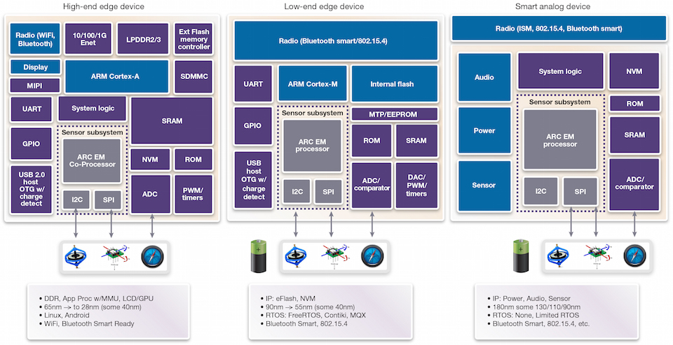
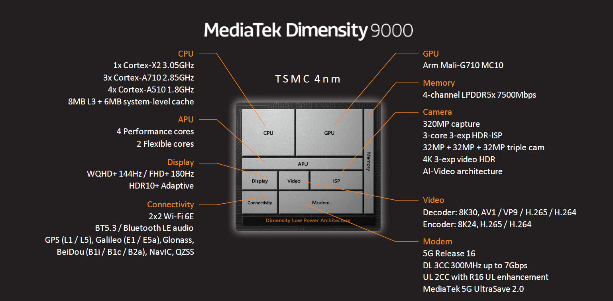
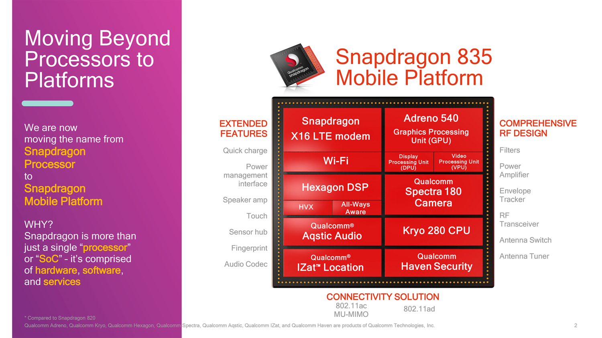
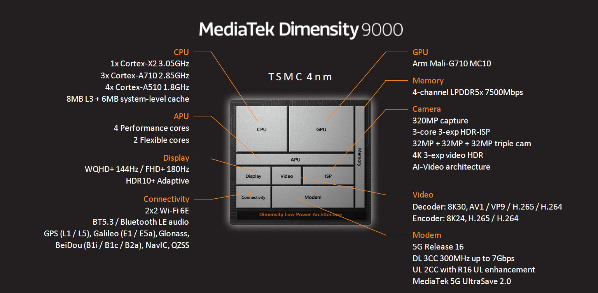
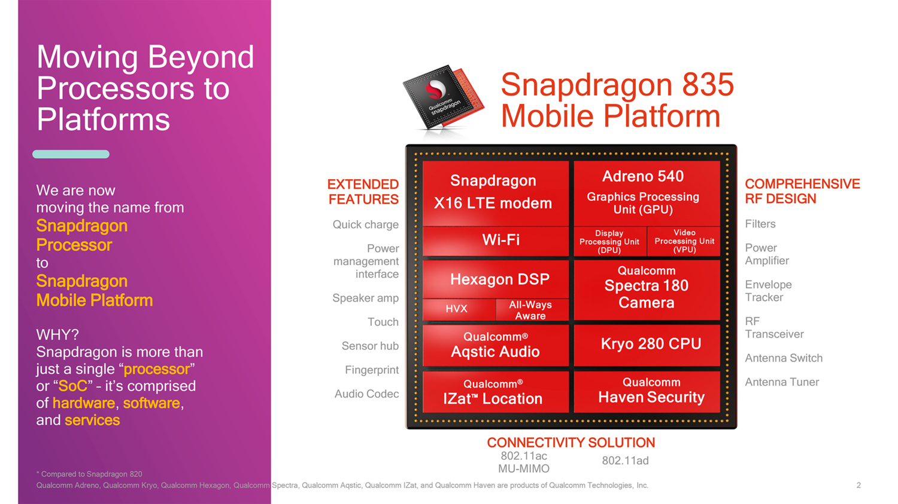
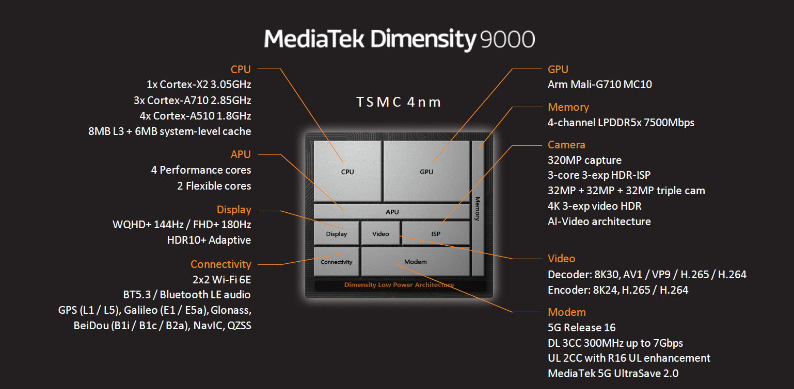
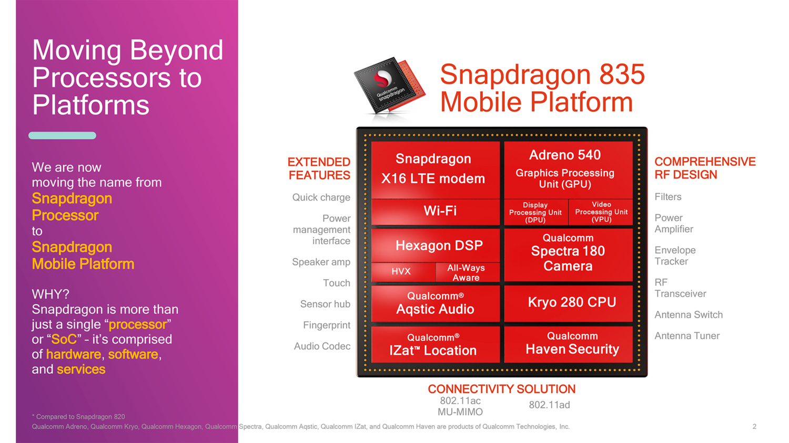
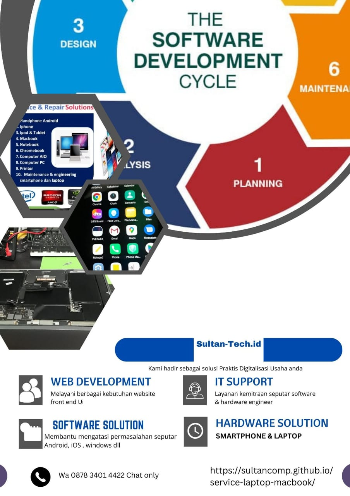
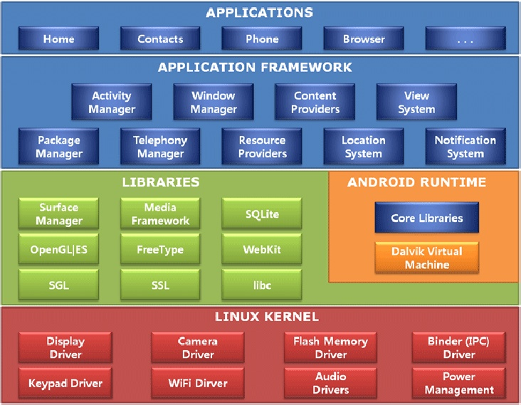

Technical engineer

.jpg) 





SmartPhone
Qualcomm
Mediatek
iphone IOS
Exynos

Komputer
Intel
AMD
Mac OS
MOBO
Operating system
fungsi pokok OS yaitu:
1. Mengontrol akses perangkat keras. Sistem operasi memanajemen interakasi antara aplikasi dan perangkat keras.
2. Untuk mengakses dan berkomunikasi dengan perangkat keras, sistem operasi perlu menginstal sebuah perangkat lunak driver untuk tiap komponen perangkat keras agar bisa teridentifikasi dan berkomunikasi antar devices serta dijalankan user pada sebuah operating system
3. Manajemen file dan folder. Sistem operasi mengatur dan membuat susunan file yang tersimpan di dalam hard disk dan media penyimpanan lain.
4. Menyediakan user interface. Sistem operasi akan menyediakan tampilan antarmuka pengguna, baik dalam bentuk baris perintah perintah (Command Line Interface - CLI) maupun dalam bentuk grafis (Graphical User Interface - GUI).
5. Manajemen aplikasi. Sistem operasi meletakan suatu aplikasi dan memuatnya ke dalam memori (RAM) komputer. Sistem operasi menjamin setiap aplikasi mendapatkan sumber daya yang cukup.

1. Linux kernel
2. Library
3. Android runtime
4. Application framework
5. Application Layer / UI
Kernel adalah suatu perangkat lunak yang menjadi bagian utama dari sebuah sistem operasi. Tugasnya melayani bermacam program aplikasi untuk mengakses perangkat keras komputer secara aman. Karena akses terhadap perangkat keras terbatas, sedangkan ada lebih dari satu program yang harus dilayani dalam waktu yang bersamaan, maka kernel juga bertugas untuk mengatur kapan dan berapa lama suatu program dapat menggunakan satu bagian perangkat keras tersebut. Hal tersebut dinamakan sebagai multiplexing. Akses kepada perangkat keras secara langsung merupakan masalah yang kompleks, oleh karena itu kernel biasanya mengimplementasikan sekumpulan abstraksi hardware. Abstraksi-abstraksi tersebut merupakan sebuah cara untuk menyembunyikan kompleksitas, dan memungkinkan akses kepada perangkat keras menjadi mudah dan seragam. Sehingga abstraksi pada akhirnya memudahkan pekerjaan programer. Untuk menjalankan sebuah komputer kita tidak harus menggunakan kernel sistem operasi. Sebuah program dapat saja langsung di- load dan dijalankan diatas mesin 'telanjang' komputer, yaitu bilamana pembuat program ingin melakukan pekerjaannya tanpa bantuan abstraksi perangkat keras atau bantuan sistem operasi. Teknik ini digunakan oleh komputer generasi awal, sehingga bila kita ingin berpindah dari satu program ke program lain, kita harus mereset dan meload kembali program-program tersebut.
Ada 4 kategori kernel:
1.
2.
3.
4.
Kelebihan Exokernel: Memiliki fungsi perlindungan dan pembagian resource untuk hardware. Bisa dimasukkan library sistem oparasi lebih dari satu sehingga bisa menjalankan program-program untuk sistem operasi secara bersamaan.
Dari keempat kategori kernel yang disebutkan diatas, kernel Linux termasuk kategori monolithic kernel. Kernel Linux berbeda dengan sistem Linux. Kernel Linux merupakan sebuah perangkat lunak orisinil yang dibuat oleh komunitas Linux, sedangkan sistem Linux, yang dikenal saat ini, mengandung banyak komponen yang dibuat sendiri atau dipinjam dari proyek pengembangan lain.
Fungsi kernel
Tugas utama sebuah sistem pengoperasian kernel ialah membenarkan aplikasi yang lain agar bisa berjalan dan mampu menyokong mereka dengan ciri-ciri tambahan, seperti pengabstrakan perkakasan, untuk menjalan proses, kernel mesti memuat turun failnya kepada ingatan, menyediakan stack untuk program dan pergi ke lokasi yang diberikan di dalam program, ini memulakan perjalanan sesebuah program, cara ini dipanggil scheduling. Dalam sistem berbilang kerja, kernel secara asasnya akan memberikan setiap program sedikit masa dan menukarkan dari proses ke proses dengan cepat dengan itu ia akan muncul kepada pengguna jika proses ini dijalankan secara terus menerus. Kernel mesti juga menyediakan proses ini untuk berkomunikasi, ini dikenali sebagai inter-process communication. Ini kemungkinan ada multipemprosesan yang menyokong kernel tersebut.
Kernel mempunyai akses penuh dalam ingatan sistem dan menyediakan cara-cara untuk membenarkan userland program untuk mengakses memori ini dengan selamat. Cara pertama untuk mengurus ingatan ialah virtual addressing, biasanya arkib dengan muka surat atau segmentation. Virtual addressing membenarkan kernel untuk memberikan alamat fizikal yang muncul sebagai alamat yang lain yaitu virtual address, ini membenarkan setiap program mempercayai ia hanya satu program (sebahagian daripada kernel) yang berjalan, dan ini mengelakkan aplikasi daripada berlanggar antara satu sama lain.
Dalam arahan untuk melakukan sesuatu tugas, kernel perlu untuk mengakses berbagai peranti yang bersambungan di dalam komputer, sebagai contoh, dalam arahan untuk memaparkan pengguna apa-apa saja, pemacu monitor perlu untuk muncul, peranti ini boleh dikawal melalui pemacu, di mana ia mesti dibuat oleh pembangun dan/atau disediakan oleh pengilang sesuatu peranti tersebut.
Dalam arahan untuk menyediakan kerja yang berguna, program userland mesti mempunyai akses kepada semua perkhidmatan yang disediakan oleh kernel. Ini dilaksanakan secara berbeda-bdza oleh kernel yang berlainan, tetapi mesti disediakan oleh C library, dimana ia menukarkan kelemahan kesemua sistem panggilan.
Shell adalah aplikasi yang menjadi alat untuk menghubungkan antara pangguna dengan sistem operasi, shell akan membaca apa saja yang dimasukkan oleh pengguna dan memahaminya sebagai arahan untuk menjalankan aplikasi lain, memanipulasi file, dan memberikan output. Shell juga biasa dikenal sebagai command line interface.
Shell merupakan perangkat lunak yang menyediakan antarmuka bagi pengguna sistem operasi yang menyediakan akses ke layanan kernel. Shell sistem operasi pada umumnya mempunyai 2 kategori. yaitu command Line dan graphical. Command Line shells menyediakan Command Line Interface (CLI) ke sistem operasi, sedangkan graphical shells seperti Windows Shells, menyediakan Graphical User Interface (GUI). Tujuan utama dari shell adalah untuk memulai program lain dengan melihat isi directories.
5 struktur Android
1. Linux kernel
2. Library
3. Android runtime
4. Application framework
5. Application Layer / UI
Kernel adalah suatu perangkat lunak yang menjadi bagian utama dari sebuah sistem operasi. Tugasnya melayani bermacam program aplikasi untuk mengakses perangkat keras komputer secara aman. Karena akses terhadap perangkat keras terbatas, sedangkan ada lebih dari satu program yang harus dilayani dalam waktu yang bersamaan, maka kernel juga bertugas untuk mengatur kapan dan berapa lama suatu program dapat menggunakan satu bagian perangkat keras tersebut. Hal tersebut dinamakan sebagai multiplexing. Akses kepada perangkat keras secara langsung merupakan masalah yang kompleks, oleh karena itu kernel biasanya mengimplementasikan sekumpulan abstraksi hardware. Abstraksi-abstraksi tersebut merupakan sebuah cara untuk menyembunyikan kompleksitas, dan memungkinkan akses kepada perangkat keras menjadi mudah dan seragam. Sehingga abstraksi pada akhirnya memudahkan pekerjaan programer. Untuk menjalankan sebuah komputer kita tidak harus menggunakan kernel sistem operasi. Sebuah program dapat saja langsung di- load dan dijalankan diatas mesin 'telanjang' komputer, yaitu bilamana pembuat program ingin melakukan pekerjaannya tanpa bantuan abstraksi perangkat keras atau bantuan sistem operasi. Teknik ini digunakan oleh komputer generasi awal, sehingga bila kita ingin berpindah dari satu program ke program lain, kita harus mereset dan meload kembali program-program tersebut.
Ada 4 kategori kernel:
1.
Monolithic kernel Kernel yang menyediakan abstraksi perangkat keras yang kaya dan tangguh.
2.
Microkernel Kernel yang menyediakan hanya sekumpulan kecil abstraksi perangkat keras sederhana, dan menggunakan aplikasi-aplikasi yang disebut sebagai server untuk menyediakan fungsi-fungsi lainnya.
Mikrokernel merupakan modul inti yang meyediakan beragam mekanisme yang dibutuhkan untuk mengembangkan sebuah sistem operasi, seperti halnya manajemen pengalamatan ruang tingkat rendah, manajemen thread, dan komunikasi
antar proses. Dalam implementasinya mikrokernel merupakan satu-satunya perangkat lunak yang berjalan dengan tingkat kewenangan tertinggi (umumnya disebut sebagai modus supervisor atau modus kernel) dari serangkaian level kewenangan yang tersedia pada perangkat kerasnya. Layanan yang disediakan oleh sebuah sistem operasi beberapa diantaranya adalah device driver, protokol jaringan, sistem berkas, dan kode antarmuka pengguna yang berada dalam ruang pengguna.
3.
Hybrid (modifikasi dari microkernel). Kernel yang mirip microkernel, tetapi ia juga memasukkan beberapa kode tambahan di kernel agar ia menjadi lebih cepat.
Kernel hibrida merupakan arsitektur kernel yang menggabungkan aspek-aspek yang terdapat pada mikrokernel dan kernel monolitik dalam pengembangan perangkat lunak sistem operasi. Pengkategorian kernel hibrida dipandang kontroversial karena karakteristiknya yang sangat mirip dengan karakteristik kernel monolitik sehingga beberapa kalangan mencibir pengkategorian kernel hibrida hanya sebatas diferensiasi untuk tujuan pemasaran. Umumnya pengkategorian yang lebih diterima adalah kernel monolitik dan mikrokernel.
Gagasan di belakang kernel hibrida adalah membuat suatu struktur kernel yang serupa seperti mikrokernel, namun diimplementasikan sebagai kernel monolitik. Berbeda dengan mikrokernel, semua (atau setidaknya hampir semua) layanan sistem terdapat pada ruang kernel dan bukan pada ruang pengguna. Seperti halnya pada kernel monolitik, tidak ada beban penurunan unjuk kerja seperti pada mikrokernel atas mekanisme penyampaian pesan, dan mekanisme proses lainnya, juga memiliki pemahaman yang sama seperti kernel monolitik, tidak ada keuntungan apapun atas penyediaan layanan pada ruang pengguna.
4.
Exokernel Kernel yang tidak menyediakan sama sekali abstraksi hardware, tapi ia menyediakan sekumpulan pustaka yang menyediakan fungsi-fungsi akses ke perangkat keras secara langsung atau hampir-hampir langsung.
Exokernel adalah pendekatan kernel sistem operasi yang tidak umum. Exokernel sendiri merupakan sebuah struktur sistem operasi yang disusun secara vertikal.
Tujuan exokernel adalah memaksa abstraksi yang dilakukan developer sesedikit mungkin. Exokernel biasanya sangat kecil, karena fungsionalitas yang dimilikinya terbatas pada proteksi dan penggandaan sumber daya.
Exokernel memungkinkan akses terhadap hardware secara langsung pada tingkat yang rendah.Tugas kernel hanya memastikan bahwa sumber daya yang ingin digunakan benar-benar sedang berada dalam keadaan kosong atau belum digunakan oleh yang lainnya.
Kelebihan Exokernel: Memiliki fungsi perlindungan dan pembagian resource untuk hardware. Bisa dimasukkan library sistem oparasi lebih dari satu sehingga bisa menjalankan program-program untuk sistem operasi secara bersamaan.
Dari keempat kategori kernel yang disebutkan diatas, kernel Linux termasuk kategori monolithic kernel. Kernel Linux berbeda dengan sistem Linux. Kernel Linux merupakan sebuah perangkat lunak orisinil yang dibuat oleh komunitas Linux, sedangkan sistem Linux, yang dikenal saat ini, mengandung banyak komponen yang dibuat sendiri atau dipinjam dari proyek pengembangan lain.
Fungsi kernel
Pengurusan proses
Tugas utama sebuah sistem pengoperasian kernel ialah membenarkan aplikasi yang lain agar bisa berjalan dan mampu menyokong mereka dengan ciri-ciri tambahan, seperti pengabstrakan perkakasan, untuk menjalan proses, kernel mesti memuat turun failnya kepada ingatan, menyediakan stack untuk program dan pergi ke lokasi yang diberikan di dalam program, ini memulakan perjalanan sesebuah program, cara ini dipanggil scheduling. Dalam sistem berbilang kerja, kernel secara asasnya akan memberikan setiap program sedikit masa dan menukarkan dari proses ke proses dengan cepat dengan itu ia akan muncul kepada pengguna jika proses ini dijalankan secara terus menerus. Kernel mesti juga menyediakan proses ini untuk berkomunikasi, ini dikenali sebagai inter-process communication. Ini kemungkinan ada multipemprosesan yang menyokong kernel tersebut.
Pengurusan Ingatan
Kernel mempunyai akses penuh dalam ingatan sistem dan menyediakan cara-cara untuk membenarkan userland program untuk mengakses memori ini dengan selamat. Cara pertama untuk mengurus ingatan ialah virtual addressing, biasanya arkib dengan muka surat atau segmentation. Virtual addressing membenarkan kernel untuk memberikan alamat fizikal yang muncul sebagai alamat yang lain yaitu virtual address, ini membenarkan setiap program mempercayai ia hanya satu program (sebahagian daripada kernel) yang berjalan, dan ini mengelakkan aplikasi daripada berlanggar antara satu sama lain.
Pengurusan Peranti
Dalam arahan untuk melakukan sesuatu tugas, kernel perlu untuk mengakses berbagai peranti yang bersambungan di dalam komputer, sebagai contoh, dalam arahan untuk memaparkan pengguna apa-apa saja, pemacu monitor perlu untuk muncul, peranti ini boleh dikawal melalui pemacu, di mana ia mesti dibuat oleh pembangun dan/atau disediakan oleh pengilang sesuatu peranti tersebut.
Sistem Panggilan
Dalam arahan untuk menyediakan kerja yang berguna, program userland mesti mempunyai akses kepada semua perkhidmatan yang disediakan oleh kernel. Ini dilaksanakan secara berbeda-bdza oleh kernel yang berlainan, tetapi mesti disediakan oleh C library, dimana ia menukarkan kelemahan kesemua sistem panggilan.
Shell
Shell adalah aplikasi yang menjadi alat untuk menghubungkan antara pangguna dengan sistem operasi, shell akan membaca apa saja yang dimasukkan oleh pengguna dan memahaminya sebagai arahan untuk menjalankan aplikasi lain, memanipulasi file, dan memberikan output. Shell juga biasa dikenal sebagai command line interface.
Shell merupakan perangkat lunak yang menyediakan antarmuka bagi pengguna sistem operasi yang menyediakan akses ke layanan kernel. Shell sistem operasi pada umumnya mempunyai 2 kategori. yaitu command Line dan graphical. Command Line shells menyediakan Command Line Interface (CLI) ke sistem operasi, sedangkan graphical shells seperti Windows Shells, menyediakan Graphical User Interface (GUI). Tujuan utama dari shell adalah untuk memulai program lain dengan melihat isi directories.
Hp repair
Power state range :
1. 0 - 20Ma = IC power sudah bekerja
2. 20 - 50Ma = IC CPU sudah berkerja
3. 50 - 90Ma = EMMC bekerja
4. 100 - 150Ma = Booting (tegangan kerja tahap I)
5. 150 - 250Ma = Start Up Program
6. 250 - 600Ma = Search signal (Ic RF bekerja)
1. 1,1V core Prosesor
2. 1,8V Logic I/O
3. 2,8 Logic I/O
4. 3,3 Emmc & LPDDR
5. Vbat 3,8 5V
1. 0 - 20Ma = IC power sudah bekerja
2. 20 - 50Ma = IC CPU sudah berkerja
3. 50 - 90Ma = EMMC bekerja
4. 100 - 150Ma = Booting (tegangan kerja tahap I)
5. 150 - 250Ma = Start Up Program
6. 250 - 600Ma = Search signal (Ic RF bekerja)
Tegangan Utama pada smartphone
1. 1,1V core Prosesor
2. 1,8V Logic I/O
3. 2,8 Logic I/O
4. 3,3 Emmc & LPDDR
5. Vbat 3,8 5V
1.Short before On = Arus naik tinggi tegangan drop sebelum ditekan ON dimana IC power bekerja ( short rangkaian Vbat) Cek komponen Voltage phase 1 tegangan yang hadir sebelum skelar ditekan ON
2. Short after On = Arus naik tegangan drop setelah switch ON IC Power (PMU) telah bekerja Cek tegangan yang mendapat tegangan kerja dari IC Power Rangkaian CPU,EMMC, AUDIO, WIFI, IC RF DLL
3. No current(Unresponable) = Tidak ada arus Rangkaian power Vbat tidak bekerja atau IC Power rusak atau putus jalur CEK Rangkaian voltage phase 1 baterai (Vbat), IC CHARGING, VPH PWR, VBAT SYS, IC POWER/PMU, POWER ON
4. Ampere gantung kecil = Arus 10 MA CPU tidak bekerja CEK Syarat Kerja CPU Qualqom 9008, Mediatek MTK USB PORT
1. TEGANGAN KERJA
2. TEGANGAN PERINTAH (ENABLE)
3. CLOCK
4. RESET
5. Arus gantung sedang = 60 - 120MA EMMC/UFS bermasalah CEK EMMC/UFS dan Rangkaiannya
6. Arus jatuh/kembali ke 0 meski sudah Power UP >60Ma = Ic power RUSAK
7.Arus Normal = Hp hidup problem Interface display, backlight, charging dan software
CEK INTERFACE & JALUR = DISPLAY, BACKLIGHT, CHARGING
1AMPERE = 1000MA
0,9A = 900MA
0,5A = 500MA
0,02A = 20MA
Putus Jalur Saat On/off ditekan, jarum ampere tidak menunjukkan reaksi apapun. Kemungkinan terjadi kerusakan pada jalur on/off atau dalam konektor battery. Penanganan : Balik kabel kasatmata serta negatif dalam konektor battery, jika terjadi short mengungkapkan konektor battery terhubung dengan baik. Kemungkinan kerusakan dalam jalaur switch on/off nya, lakukan pengecekan jalur on/off memakai multitester. Lakukan jumper pada jalur yang putus atau ganti switch on/off nya. Apabila kabel kasatmata serta negatif dalam konektor battery dibalik nir terjadi short, kemungkinan kerusakan terjadi dalam jalur konektor battery. Lakukan pengecekan setiap komponen yang terhubung dengan jalur konektor battery.
a. Short 20mA On/off belum ditekan, jarum ampere bergerak dikisaran 20ma kemudian kembali ke angka 0. Diperkirakan ponsel mengalami short pada jalur vbatt. Penanganan : Lakukan pemeriksaan kapasitor vbatt dalam setiap IC (PA, Power, Audio, Bluetooth/wifi, Charging, CPU, Flash). Bila terjadi short dalam kapasitor (kedua kutubnya ngeground), silahkan angkat dan ganti kapasitor
b. Short >400mA sebelum tekan on/off On/off belum ditekan, jarum ampere menyampaikan angka > 400mA. Diperkirakan terjadi short pada IC PA, IC Power, IC bluetooth, IC Charging, IC Regulator. Penanganan : Lakukan pencarian komponen yg panas, dan lakukan investigasi dalam setiap kapasitor vbatt nya. Jika kapasitor vbatt bagus maka kemungkinan IC tadi yang rusak.
c. Short >400mA setelah tekan on/off Setelah On/Off ditekan, jarum ampere >400mA. Biasanya IC Power panas, namun belum tentu IC power yang rusak, bisa jadi kerusakan pada IC PA, IC CPU, IC Flash, IC regulator serta IC yang terhubung dengan jalur VIO lain nya. Penanganan : Lakukan pengecekan dalam capasitor di jalur VIO yang dicurigai short dengan menggunakan AVOmeter mode buzzer. Hubungkan probe hitam ke ground dan lakukan pengecekan pada kedua kutub capasitor menggunakan probe merah, jika kedua kutub tadi berbunyi maka di jalur IC tadi mengalami short. Kemudian cari komponen yang panas menggunakan melaksanakan suntik tegangan sebesar 1.8V (tegangan VIO maks 1.8V). Atur tegangan dalam power supply sebesar 1.8V, hubungkan kabel hitam power supply dalam ground PCBA sedangkan kabel merah dalam kapasitor jalur VIO yg short. Kemudian cari komponen yang panas dan lakukan penggantian.
A. Cek input Vbus ( dioda mode ) normal atau short ?
B. Cek Arus PSU
C. Identifikasi fisik komponen dan PCB atau mainboard
D. Pahami Karakteristik dan cara kerja komponen serta cara kerja IC dan rangkaian
E. Identifikasi gejala dan indikasi jenis kerusakan serta system proteksinya
Analisa lanjutan kerusakan Smartphone
1. Cek Arus PSU = tekan power untuk identifikasi mode On
2. cek fastboot = hubungkan Hp ke Pc jika terkoneksi (respon) berarti Cpu bekerja
3. Cek rangkain Konektor, rangkaian Vbus & flexible2, Vbatt
4. Test point dan tracking jalur serta lokalisir sumber kerusakan
5. cek syarat kerja CPU :
a. tegangan kerja V1 = 1,8 V
b. tegangan kerja V3 = 2,8V (output IC power ke RF)
c. control = 1,8V (output CPU ke PMU)
d. RESET = 1,8V
e. Vcore = 1,5V
f. RF clock = 26 Mhz
6. Pelajari berbagai alternatif penyelesaiannya
SYARAT menjadi TEKNISI MANDIRI
1. Bisa melakukan pengukuran MTD
2. menguasai skematik
3. mampu melakukan menganalisa
4. ketrampilan Skill
5. terus belajar dan pantang menyerah
1 Pasif = Pengukuran hambatan dalam tanpa tegangan dengan diode mode atau impendansi menggunakan Buzzer mode
2. Aktif = Pengukuran menggunakan Tegangan AC atau DC
3. Seri = meletakkan Probe hitam dan merah langsung ke titik ukur baik komponen maupun jalur
4. Paralel = letakkan probe hitam ke ground & probe merah ketitik ukur untuk Avometer digital dan sebaliknya untuk multitester analog
1.konslet sebelum IC power bekerja terjadi saat kita menghubungkan ponsel dengan power supply langsung menunjukkan pergerakan Arus tertentu dan berhenti pada posisi tertentu tanpa kita tekan saklar On/off. Komponen ponsel yang mengalami konslet pada kasus seperti ini biasanya berada pada komponen yang mendapatkan tegangan kerja langsung dari baterai. Gejala yang timbul akibat konslet ini ialah ponsel Panas hingga MATOT
2. konslet setelah IC power bekerja terjadi takkala kita menghubungkan ponsel dengan power supply kemudian menekan saklar ON/OFF. Indicator Ampere Arus menunjukkan pergerakan Arus tertentu dan berhenti diposisi tertentu yang tidak Normal ( konsumsi Arus naik tinggi melebihi nilai konsumsi yang dibutuhkan secara wajar). Biasanya terdapat short pada komponen yang mendapatkan tegangan kerja dari IC Power. Gejala yang timbul akibat konslet ini ponsel panas saat ditekan On/off.
3. konslet pada saat transmit/calling terjadi disaat pengguna melakukan panggilan indicator Arus PSU melampaui konsumsi normal +- 3,7V s.d 4,5V Gejala Ic panas dan boros baterai saat melakukan panggilan telepon.
4. konslet WIFI, GPS, Bluetooth Apk dll Short ini terjadi saat Wifi/GPS/BLUETOOTH DIAKTIFKAN
5. KONSLET ARUS STANDBY ialah konslet yang terjadi dimana ponsel pada keadaan dia(standby) komsumsi arus 0. Cirinya indicator arus PSU menunjukkan pergerakan arus tertentu padahal konsumsi arus standby adalah O ampere. Komponen yang short pada kasus ini biasanya yang mendapatkan tegangan kerja dari IC power. Gejala ponsel panas saat standby
Short sircuit adalah short yang terdapat pada jalur Rangkaian sebuah PCB atau mainboard. Perbedan short sirkuit (jalur) dan short komponen
1. Bila terdapat selisih nilai Ampere yang signifikan pada saat pengujian konsleting PSU dengan nilai ampere short pada Vbus/VBat atau area voltage injection (titik penyuntikan tegangan Maka ini merupakan short komponen
2. Jika hanya terdapat sedikit selisih nilai short pada ampere PSU dengan nilai Ampere yang short pada penyutikan pada Logic board maka ini merupakan short Sircuit
Software
Recovery mode merupakan tool bawaan untuk user melakukan hard/factory reset maupun wipe data dan caches1. ASUS: Power + Volume Up
2. Samsung: Power + Home + Volume Up
3. OPPO: Power + Volume Down
4. VIVO: Power + Volume Down
5. SONY: Power + Volume Up
6. Huawei: Power + Volume Up
7. Xiaomi: Power + Volume Down
8. Realme: Power + Volume Down
9. Nokia: Power + Volume Up
10. Lenovo: Power + Volume Up
11. Smartfren: Power + Volume Up
12. LG: Power + Home + Volume Up
13. HTC: Power + Volume Down
14. OnePlus: Power + Volume Down
15. ADVAN: Power + Volume Down
16. infinx : power + Volume up
Lepaskan tombol Daya jika INFINIX logo muncul lalu Lepaskan Volume Naik saat gambar XOS "no command" muncul.
manfaat Recovery mode di Android menggunakan Pc dan laptop
a. melakukan reset pabrik: Jika perangkat Anda tidak berfungsi dengan benar, atau jika Anda ingin menghapus semua data di perangkat Anda, Anda dapat melakukan reset pabrik menggunakan mode pemulihan.
b. menginstal ROM khusus: Jika Anda ingin menginstal ROM khusus pada perangkat Android Anda, Anda harus masuk ke mode pemulihan untuk mem-flash ROM.
c. menghapus partisi cache: Jika perangkat Anda berjalan lambat atau jika Anda mengalami aplikasi mogok, Anda dapat menghapus partisi cache menggunakan mode pemulihan.
Untuk masuk ke recovery mode di perangkat Android menggunakan PC langkah-langkah di bawah ini:
Langkah 1: Hubungkan perangkat Android Anda (seperti ponsel cerdas dan tablet) ke PC menggunakan kabel USB.
Langkah 2: Instal ADB di PC Anda dan aktifkan USB debugging di perangkat Anda.
Langkah 3: Buka jendela command prompt di folder ADB.
Langkah 4: Ketik perintah berikut di jendela command prompt dan tekan Enter:
adb reboot recovery
Langkah 5: Perangkat Android Anda sekarang akan reboot ke mode pemulihan.
EDL singkatan dari Emergency Download.
adalah Mode Khusus untuk memberikan pengguna tingkat akses yang lebih besar terhadap perangkat Xiaomi Kalian. Kegunaan EDL diiantaranya Anda dapat membuka Bootloader secara tidak resmi, Flash Stock Firmware, Unbrick perangkat Anda dari Bootloop dll. Saat EDL mode aktif maka, Prosesor Snapdragon berada dalam mode download image. EDL mode dapat menjadi alternatif selain Fastboot untuk melakukan flashing ROM di Hp Xiaomi kalian.
USB debugging adalah fitur yang ditujukan untuk para pengembang Android, baik itu pengembang sistem atau pun aplikasi.
Android menyediakan fitur ini agar perangkat Android bisa berkomunikasi dengan Android SDK (Software Developer Kit) melalui koneksi USB. Dengan fitur ini, Android dapat menerima perintah, file, atau yang lain dari PC dan memungkinkan PC untuk menarik informasi penting seperti log files dari perangkat Android.
Karena fitur ini tersedia pada opsi pengembang, maka langkah pertama yang harus Anda lakukan adalah mengaktifkan Developer Options. Untuk beberapa jenis handphone Android mungkin memiliki langkah yang sedikit berbeda, namun secara garis besar berikut beberapa langkah utama yang bisa Anda ikuti.
1. Buka menu setting atau pengaturan pada perangkat Android Anda. Di dalam menu setting silakan masuk ke menu “About phone”
2. Temukan menu “Software version”, “Versi Software”, atau “Software information”. Jika sudah, Anda dapat masuk ke menu tersebut.
3. Selanjutnya, cari menu “Build Number”. Untuk bisa masuk ke menu ini, Anda harus mengklik menu tersebut sebanyak 7 kali.
4. Setelah opsi pengembang aktif di perangkat Android Anda, berikut ini langkah-langkah untuk mengaktifkan fitur ini.
1. Masuk ke menu setting atau pengaturan.
2. Cari menu opsi pengembang atau developer options.
3. Scroll ke bawah dan aktifkan opsi USB debugging.
4. Jika ada notifikasi “Allow development settings ?” silakan pilih “OK”.
adalah Mode Khusus untuk memberikan pengguna tingkat akses yang lebih besar terhadap perangkat Xiaomi Kalian. Kegunaan EDL diiantaranya Anda dapat membuka Bootloader secara tidak resmi, Flash Stock Firmware, Unbrick perangkat Anda dari Bootloop dll. Saat EDL mode aktif maka, Prosesor Snapdragon berada dalam mode download image. EDL mode dapat menjadi alternatif selain Fastboot untuk melakukan flashing ROM di Hp Xiaomi kalian.
USB debugging adalah fitur yang ditujukan untuk para pengembang Android, baik itu pengembang sistem atau pun aplikasi.
Android menyediakan fitur ini agar perangkat Android bisa berkomunikasi dengan Android SDK (Software Developer Kit) melalui koneksi USB. Dengan fitur ini, Android dapat menerima perintah, file, atau yang lain dari PC dan memungkinkan PC untuk menarik informasi penting seperti log files dari perangkat Android.
Karena fitur ini tersedia pada opsi pengembang, maka langkah pertama yang harus Anda lakukan adalah mengaktifkan Developer Options. Untuk beberapa jenis handphone Android mungkin memiliki langkah yang sedikit berbeda, namun secara garis besar berikut beberapa langkah utama yang bisa Anda ikuti.
1. Buka menu setting atau pengaturan pada perangkat Android Anda. Di dalam menu setting silakan masuk ke menu “About phone”
2. Temukan menu “Software version”, “Versi Software”, atau “Software information”. Jika sudah, Anda dapat masuk ke menu tersebut.
3. Selanjutnya, cari menu “Build Number”. Untuk bisa masuk ke menu ini, Anda harus mengklik menu tersebut sebanyak 7 kali.
4. Setelah opsi pengembang aktif di perangkat Android Anda, berikut ini langkah-langkah untuk mengaktifkan fitur ini.
Cara mengaktifkan USB Debugging
1. Masuk ke menu setting atau pengaturan.
2. Cari menu opsi pengembang atau developer options.
3. Scroll ke bawah dan aktifkan opsi USB debugging.
4. Jika ada notifikasi “Allow development settings ?” silakan pilih “OK”.
adalah alat command line serbaguna yang memungkinkan Anda berkomunikasi dengan perangkat.
Perintah adb memfasilitasi berbagai tindakan perangkat, seperti menginstal dan men-debug aplikasi.
adb menyediakan akses ke shell Unix yang dapat Anda gunakan untuk menjalankan berbagai perintah di perangkat.
Ini adalah program klien-server yang meliputi tiga komponen:
1. Klien, yang mengirimkan perintah. Klien berjalan pada mesin pengembangan. Anda dapat memanggil klien dari terminal command line dengan mengeluarkan perintah adb.
2. Daemon (adbd), yang menjalankan perintah di perangkat. Daemon berjalan sebagai proses latar belakang di setiap perangkat.
3. Server, yang mengelola komunikasi antara klien dan daemon. Server berjalan sebagai proses latar belakang pada mesin pengembangan Anda.
Daftar Perintah Global atau Global Command Line ADB
adb -a
Berfungsi mencari perangkat pada semua jaringan yang terdaftar tidak hanya pada jaringan lokal atau localhost.
adb -d
Berfungsi mengarahkan perintah adb keperangkat yang terpasang secara langsung ke satu usb perangkat.
Error atau kesalahan terjadi jika ada lebih dari satu perangkat terpasang menggunakan usb.
adb -e
Berfungsi mengarahkan perintah adb keperangkat yang terpasang secara langsung ke proses emulator yang sedang berjalan.
Error atau kesalahan terjadi jika ada lebih dari satu proses emulator yang sedang berjalan.
adb -H
Berfungsi untuk memberi informasi tentang ADB server host. 'localhost'
contoh:
$ adb -H localhost
adb -P port
Berfungsi untuk memberi informasi tentang ADB server port. '5037'
contoh:
$ adb -P 5037
adb -L
Berfungsi untuk memberi informasi ADB server socket.
contoh:
$ adb -L tcp:localhost:5037
adb -s
Berfungsi mengarahkan perintah adb keperangkat yang terpasang secara langsung ke proses emulator yang sedang berjalan dengan menambahkan nomer seri yang sudah terdaftar.
contoh:
$ adb -s emulator-5678
Daftar Perintah Umum atau General Command Line ADB
adb devices
Berfungsi untuk mencetak atau memberi tahu kita tentang informasi dan daftar android yang sudah ditemukan oleh adb. opsi -l dapat membantu kita untuk mengetahui lebih detail tentang perangkat yang sudah terdaftar
contoh:
$ adb devices
$ adb devices -l
adb help Berfungsi untuk memberi tahu kita tentang sebuah informasi tentang daftar perintah dan keterangan perintah.
adb version
Berfungsi untuk memberi informasi tentang versi adb yang sedang kita pakai.
adb run-as nama_file
Berfungsi untuk menjalan aplikasi dengan memakai level akses sama dengan aplikasi yang sedang dijalankan tanpa memerlukan akses root. Perintah ini dapat membantu anda jika perangkat atau emulator belum ter-rooting dan status aplikasi harus bisa didebug.
Daftar Perintah Jaringan atau Networking Command Line ADB
adb connect
Berfungsi untuk menyambungkan perangkat melalui TCP/IP. port '5555' sebagai nilai tetap jika nilai port tidak terset.
contoh:
$ adb connect localhost::5555 $ adb connect localhost
adb disconnect host::port
Berfungsi untuk memutus menyambungkan perangkat melalui TCP/IP. port '5555' sebagai nilai tetap jika nilai port tidak terset. Jika kita tidak menambahkan parameter pilihan host::port maka semua sambungan akan terputus.
contoh:
$ adb disconnect localhost::5555
(memutus sambungan localhost::5555)
$ adb disconnect
(memutus semua sambungan)
adb forward --list
Berfungsi untuk memberikan informasi tentang semua sambungan socket yang ter-forward.
adb kill-server
Berfungsi untuk menghentikan proses adb server yang sedang berjalan. Daftar Perintah Pengiriman File atau File Transfer Command Line ADB
adb push
Berfungsi untuk mengirimkan duplikasi file atau folder dari lokasi lokal(asal) kelokasi perangkat atau emulator target.
contoh:
adb push adb pull
Berfungsi untuk mengirimkan duplikasi file atau folder dari lokasi perangkat atau emulator target ke lokal folder. jika menggunakan -a akan mempertahankan cetakan waktu dan mode file
contoh:
adb pull adb unistall
Berfungsi untuk menghapus atau mencopot aplikasi pada target atau emulator.
'-k' untuk menjaga data dan cache tidak ikut terhapus contoh:
$ adb unistall adb kill-all
Berfungsi untuk mematikan semua proses aplikasi yang sedang berjalan.
contoh:
$ adb kill-all
adb force-stop
Berfungsi untuk menghentikan proses aplikasi yang sedang berjalan.
contoh:
$ adb force-stop com.nama_aplikasi.app
adb kill-all
Berfungsi untuk mematikan semua proses aplikasi yang sedang berjalan.
contoh:
$ adb kill-all
Daftar Beberapa Perintah Command Line ADB
adb reboot
Berfungsi untuk merestart target atau emulator.
$ adb reboot
Ada beberapa pilihan untuk perintah adb reboot. Antara lain:
$ adb reboot recovery
Berfungsi untuk merestart Perangkat kedalam mode Recovery.
$ adb reboot bootloader
Berfungsi untuk merestart Perangkat kedalam mode Bootloader.
$ adb reboot fastboot
Berfungsi untuk merestart Perangkat kedalam mode Fastboot.
adb root
Berfungsi untuk merestart adbd dengan izin root atau administrator.
$ adb root
firmware kumpulan kode Pemerograman yg dirancang menjadi Operating system (Os)
sedangkan ROM ialah bagian dari Part system pada firmware
ROM Types :
ALPHA >> Tag yang di buat untuk memberitahu bahwa Custom ROM ini baru saja dibuat pertama kali dengan Log Initial Release, sehingga belum bisa di gunakan secara maksimal, karena masih akan ada banyak sekali Bugs di dalam Custom ROM tersebut.
BETA >> Tag ini merupakan sebuah Tags kelanjutan dari Alpha, jika Custom ROM yang di buat sudah minim Bugs dan sudah bisa di gunakan dalam Ratio 70-80%, maka Custom ROM tersebut sudah bisa di Klasifikasikan sebagai BETA version, tetapi masih ada sedikit Bugs dan belum bisa berjalan secara 100%.
STABLE >> Tag ini berikan kepada Custom ROM yang sudah bisa di gunakan dengan Layak, artinya sudah hampir tidak ada Bugs dan bisa di gunakan secara Maksimal.
ROM developer
1. Official : Stock ROM
2. unofficial: Costum ROM
ROM Types :
ALPHA >> Tag yang di buat untuk memberitahu bahwa Custom ROM ini baru saja dibuat pertama kali dengan Log Initial Release, sehingga belum bisa di gunakan secara maksimal, karena masih akan ada banyak sekali Bugs di dalam Custom ROM tersebut.
BETA >> Tag ini merupakan sebuah Tags kelanjutan dari Alpha, jika Custom ROM yang di buat sudah minim Bugs dan sudah bisa di gunakan dalam Ratio 70-80%, maka Custom ROM tersebut sudah bisa di Klasifikasikan sebagai BETA version, tetapi masih ada sedikit Bugs dan belum bisa berjalan secara 100%.
STABLE >> Tag ini berikan kepada Custom ROM yang sudah bisa di gunakan dengan Layak, artinya sudah hampir tidak ada Bugs dan bisa di gunakan secara Maksimal.
ROM developer
1. Official : Stock ROM
2. unofficial: Costum ROM
Root (android) atau jailbreak (Ios) adalah sebuah proses customisasi Os menggunakan file library exploit
yang ditanam pada system Os melalui folder binary yg bekerja membuka akses izin untuk merubah Value maupun konfigurasi ekosistem Os
TWRP (Team Win Recovery Project) merupakan tools customize recovery mode yang memiliki berbagai fitur dan fungsi dari pada Recovery mode bawaan yang disediakan pada smartphone Android . instalasi TWRP bisa dengan 2 cara :
1. fastboot via Pc Tools download
a. fastboot driver
b. downlowd Android SDK Platform tools
c. TWRP img
d. file root exploit magisk/superSu
e. kabel Usb
e. laptop atau pc
intallasi
1. UBL untuk costum recovery
2. costum recovery TWRP/orangeFox
3. move file TWRP to folder fastboot driver disk C: Program file x86/min Adb and fastboot
4. rename file menjadi twrp. img
5. masuk fastboot mode
6. hub hp ke Pc
7. cmd via win here
a. buka Folder atau Drive tempat Terget Direktori CMD disk C: Program file x86/min Adb and fastboot
b. Setelahnya tekan dan tahan tombol SHIFT pada Keyboard di barengan dengan Klik Kanan pada Mouse.
c. Silahkan gunakan Command Prompt Standard atau PowerShell,keduanya mempunyai fungsi yang sama saja.
d. Jika sudah, maka hasilnya akan terlihat seperti ini, yaitu otomatis langsung terbuka ke Spesifik Folder atau Drive yang sudah kalian targetkan sebelumnya.
e. enter => Done
2. Rooting via flashify tool
Download Custom ROM yang akan kalian gunakan, letakan Custom ROM tersebut pada Internal Storage Smartphone Android yang kalian miliki di tempat yang mudah untuk di temukan.
Setelahnya, masuk ke dalam Mode TWRP.
Pilih Opsi Install.
Cari Custom ROM yang sudah kalian pindahkan Memory Internal dan Konfirmasi Installasi.
Tunggu hingga Proses selesai.
Setelahnya, agar bisa berjalan dengan Smooth / Lancar, pilih Opsi Wipe pada TWRP, langkah ini akan melakukan Full Wipe pada System Custom ROM yang telah di Install, agar bisa berjalan tanpa adanya gangguan dari jejak Stock ROM yang kalian gunakan sebelumnya.
Cari Custom ROM yang sudah kalian pindahkan Memory Internal dan Konfirmasi Installasi.
Tunggu hingga Proses selesai. Setelahnya silahkan lakukan Reboot to System dengan memilih Opsi Reboot pada Menu TWRP.
Booting pertama akan lama, bisa sampai 20 Menit lebih
laptop repair
1. Arus naik bersamaan dengan tegangan sebelum tegangan adaptor 19V atau ampere naik drastis sementara voltase turun(drop) sebelum diswicht ON. Konslet pada area rangkaian separator dan outputnya. Perbaikan : cabut R out lalu inject(suntik) tegangan cari komponen yang panas
2. Arus naik tinggi/menyentak sesaat saat tegangan adaptor 19V/20V Konslet pada rangkaian 3V/5V atau outputnya. Perbaikan : Cabut kumparan pada masing-masing regulator 3V/5V lalu beri tegangan yang sesuai kemudian cari komponen yang panas atau hangus
3. Arus menyentak naik drastic > 400MA saat di switch ON. Konslet pada area Regulator IC* BESAR seperti EC, SB, NB, VGA, RAM. Perbaikan : cabut kumparan pada tiap Regulator beri tegangan yang sesuai lalu cari komponen yang panas.
4. Arus naik pertama kali < 200MA. Ada rangkaian regulator yang tidak bekerja. Perbaikan : setelah di ON ukur semua kumparan pada tiap rangkaian Regulator
5. Arus naik pertama kali +- 300MA lalu naik lagi +- 500-600MA. Perbaikan : Cek RAM & Prosesor
6.amper kecil/Arus naik pertama kali +- 300MA lalu naik lagi +- 700MA lalu jatuh ke Nol. Perbaikan : CEK NEC TOKIN & Rehot NB
7. Arus naik +- 1A lalu Stagnan. Perbaikan :Cek/flash bios, cek Rangkaian LVDS & Panaskan VGA
8. ada garis kecil disudut layar ( blank hitam/black screen) Perbaikan : Cek RAM dan Rangkaian RAM bila normal coba Flash bios
9. Hang logo atau sesudah windows & Operating System (OS) not found. Perbaikan :
a. CEK RAM & HDD
b. cabut satu persatu Keyboard/baterai/Wifi/DVD/speaker/camera dll
10. Arus +- 100MA cek IC bios dan flashing
11. Ampare PSU tidak respon cek jack adaptor dan fleksibel jack serta test point distribusi 19V.
12. distribusi tegangan normal tapi tidak bisa di On. Perbaikan : Cek tegangan 3V dikaki swicht ON atau fleksibel rangkaian ON
13. Arus PSU normal tapi laptop terkadang mau hidup terkadang MATOT. Perbaikan : cek mosfet dan elco
14. adapun laptop baru Single CHIP (SOC) > +350 -500MA sudah dapat start UP booting secara sempurna sampai ke Menu desktop
A. Cek input Vbus atau jack adaptor/magsafe ( dioda mode ) normal atau short ?
B. Cek Arus
C. Identifikasi fisik komponen dan PCB atau mainboard
D. Pahami Karakteristik dan cara kerja komponen serta cara kerja IC dan rangkaian
E. Identifikasi gejala dan indikasi jenis kerusakan serta system proteksinya
F. Test point dan tracking jalur serta lokalisir sumber kerusakan
G. Pelajari berbagai alternatif penyelesaiannya
point atau Pengukuran baik pasif (hambatan dalam/impedansi) maupun aktif (tegangan kerja dan perintah) merupakan
tahapan Analisa setelah melakukan identifikasi fisik, gejala dan indikasi kerusakan untuk menentukan sumber kerusakan
berasal dari suatu jalur Normal atau terputus atau berasal dari komponen atau IC regulatornya Caranya :
a. gunakan MTD skala Ohm Ω atau buzzer max 2k ohm Probe Merah pada ground dan Probe Hitam pada tujuan titik pengukuran.
b. jika MTD menunjukkan angka = umumnya OK
c. jika MTD menunjukkan angka 000 = terhubung ground/beep buzzer
d. jika MTD menunjukkan angka OL/I = Putus atau not connected
e. nilai test point pada satu Blok rangkaian relatif sama
f. bila nilai test point Normal namun system tetap belum bekerja maka lihat skema atau bandingkan dengan MOBO lainnya serta lakukan pengukuran Aktif dan Analisa system proteksinya
A. tegangan kerja
B. tegangan perintah (enable/trigger)
c. No protection
Regulator ada 2 jenis yaitu LDO dan SMPS
SAP ( Standar Analisis Prosedur)
1. main power
2. separator ( power selector )
3. RTC, Signal, clock
4. Power UP timing S5-S0
5. Switch ON dan boot Up
6. Bios
7. Interfaces = RAM, HDD, LCD, KEYBOARD, LCD/MONITOR, FLEXIBLE DLL
8. LVDS , GFX dan GPU
9. OS dan DRIVER
10. IC failured = datasheet
11. CHIPSET dan SOC
Rangkaian On ialah rangkaian yang akan pertama kali bekerja saat dilakukan switch On dengan konsumsi arus pertama kali naik +- 200ma. Syarat kerja Rangkaian ON : Aktif sebelum On
1. VDD = 3,3V/5V always
2. RTC & Clock
3. Syarat kerja EC = AC IN & SB = S5_ON terpenuhi = 3V always/VCC
4. Bios Normal = 3 V di kaki 3,5,7 IC Bios
5. Power ON SW 1/Sys_ON = +- 3V
Aktif setelah ON
4. Resume Reset = 3,3V
5. Power button _Out = 3,3V
6. Sleep_3,4,5 = 3,3V
7. VR_ON, Main_ON, SYS_ON,SUSP = 3,3V
Rangkaian tegangan alw (Tegangan standby) 3V & 5V ialah suatu Rangkaian power yang mendapatkan tegangan Utama (main power) meskipun laptop dalam keadaan off. V alw merupakan jalur utama yang mendapatkan tegangan utama 19V/20V atau sesuai dengan yang didesign vendornya setelah melewati Rout separator. Cirinya lampu indicator hidup serta terdapat nilai arus (pengecekan PSU) berkisar 5-10ma. Kombinasi design regulator Always diantaranya terdiri dari (3V & 5V) atau 3V , 5V atau 3V+ IC charger , 5V . Apabila hilang tegangan utama 3V dan 5V ini maka laptop akan MATI TOTAL (MATOT).
Tegangan utama (Always / AL) adalah tegangan yang wajib hadir (wajib ada) pada saat disambungkan ke charger yang telah dialiri listrik (terpasang sempurna).
(1). Tegangan utama terdiri dari tegangan : 12V,15V,18,5V dan biasanya 19V & 20V
(2). 5 Volt = 5Alw/ 5AL/ 5 VPCU
(3). 3.30 Volt = 3 Alw/ 3AL/ 3 VPCU
Syarat Kerja :
- a. Output separator => V in / B+ / DC Batt out
- b. IC Swichting power supply
- c. Dua pasang mosfet
- d. Dua elco
- e. Dua kumparan besar
- f. Enable (perintah kerja)
BIOS (Basic Input Output System ) merupakan sebuah program atau perangkat lunak antarmuka tingkat rendah yang berfungsi mengendalikan atau mengontrol perangkat keras yang terpasang pada komputer.BIOS disimpan atau ditanamkan di dalam ROM (read only memory).
BIOS menyediakan antarmuka komunikasi tingkat rendah, dan dapat mengendalikan banyak jenis perangkat keras (seperti keyboard). Karena kedekatannya dengan perangkat keras, BIOS umumnya dibuat dengan menggunakan bahasa rakitan (assembly) yang digunakan oleh mesin yang bersangkutan. BIOS pertama kali muncul dalam sistem operasi CP/M. BIOS merupakan bagian dari CP/M yang dimuat pada saat proses booting dimulai Beberapa mesin yang menjalankan CP/M memiliki boot loader sederhana dalam ROM). Kebanyakan versi DOS memiliki sebuah berkas yang disebut “IBMBIO.COM” (IBM PC-DOS) atau “IO.SYS” (MS-DOS) yang berfungsi sama seperti halnya CP/M disk BIOS
BIOS juga sering disebut sebagai ROM BIOS karena pada awalnya BIOS disimpan dalam chip memori hanya baca (ROM) dalam motherboard. Sehingga BIOS dapat dieksekusi pada waktu komputer dinyalakan. BIOS dalam komputer PC modern disimpan dalam chip ROM yang dapat ditulisi ulang secara elektrik atau Flash ROM. Saat ini Flash BIOS lebih populer dibandingkan dengan ROM BIOS.
Meskipun BIOS disimpan dalam memori hanya baca, konfigurasi BIOS tidak disimpan dalam ROM melainkan sebuah chip terpisah yang disebut se-bagai Real-time clock (RTC). RTC ini berupa sebuah Non-Volatile Random Ac-cess Memory (NVRAM). NVRAM juga sering disebut sebagai Complimentary Metal-Oxide Random Access Memory (CMOS RAM), Karena menggunakan metode pembuatan CMOS, NVRAM membutuhkan daya yang sangat kecil agar dapat bekerja. Meskipun disebut non-volatile, NVRAM sebenarnya meru-pakan sebuah chip yang volatile, sehingga data yang tersimpan di dalamnya dapat terhapus dengan mudah. NVRAM "dihidupi" oleh sebuah baterai (mirip baterai kalkulator atau jam) dengan bahan Litium dengan seri CR-2032. Se-buah baterai Litium CR-2032 dapat menghidupi NVRAM selama tiga hingga lima tahun. Jika daya dalam baterai habis, atau daya yang disuplainya terputus (akibat dicabut dari slotnya), maka semua konfigurasi akan dikembalikan ke kondisi standar, sesuai ketika BIOS tersebut diprogram oleh pabrikan. BIOS umumnya memberikan laporan CMOS Checksum Error atau NVRAM Check-sum Error.
Windows, mac & Linux
komponen
1. RESISTOR (R) = merupakan komponen elektronika pasif yang dapat menghambat current(arus) pada sebuah rangkaian Fungsi : pembagi tegangan, pembatas arus, Penurun tegangan, proteksi dll.
Satuan & simbol : OHM Ω
Jenis Resistor berdasarkan fungsi : fixed , variabel, NTC(suhu), LDR(cahaya), DLL
Cara penulisan & membaca nilai Resistor : Nilai 04.7 = 4,7k Ω = 4700 Ω = 4k7 Ω
Teknik Pengukuran & analisa : jika nilai naik/turun secara drastis = RUSAK
Indikasi kerusakan serta dampaknya : hangus, putus, terjadi perubahan nilai hambatan (melar/menyusut)
Rumus menaik dan menurunkan tegangan ( Devider )
Vout = Vin x ( R2 / R1+R2) kunci menaikkan tegangan ialah menaikkan nilai R2 yang terhubung ke GND
2. KAPASITOR/KONDENSATOR (C) = Komponen pasif yang dapat menyimpan muatan listrik sementara
Fungsi : Penyaring (filter) dan penghubung (coupling)
Satuan dan Simbol : farad (F)
1 farad = 1.000.000 µF (Mikro farad)
1µF = 1000 nF (nano farad)
1µF = 1.000.000 pF (pico farad)
1nF = 1000 pF (pico farad)
Jenis-jenis kapasitor : keramik (non polar), tantalum(bipolar), elco(bipolar)
Indikasi kerusakan : short, kering & gelembung pada elco
Dampaknya : hang, black screen, matot
pengukuran & Analisa :
A. jika angka naik terus lalu menunjukkan I/OL = OK
B. jika angka naik terus lalu menunjukkan angka = BOCOR
C. Jika MTD tidak bereaksi = Rusak
D. kapasitor normal tidak boleh terhubung/bunyi mode buzzer serta nilai faradnya sesuai dengan nilai pabrikasi
3. LILITAN/KUMPARAN/COIL/INDUKTOR (L) = komponen pasif yang terdiri susunan lilitan kawat yang membentuk kumparan
Fungsi : Menyimpan arus listrik dalam medan magnet, filter frekuensi tertentu, transformator Satuan & simbol : henry (H)
Teknik Pengukuran & analisa : pengukuran dengan skala ohm Ω nilai hambatannya HARUS NOL/mendekati 0 Indikasi kerusakan serta dampaknya : ciri-ciri Coil (Induktor) Rusak terdapat Nilai hambatan, laptop panas dan Putus jalur.
4. DIODA (D) = Komponen elektronika Aktif yang terbuat dari bahan semikonduktor umumnya mempunyai 2 elektroda(terminal) yaitu ANODA(+) dan KATODA (-). Prinsip kerjanya mengalirkan arus dari sisi tipe P (anoda) menuju ke sisi tipe N (katoda) namun tidak dapat mengalirkan arus kearah sebaliknya.
Fungsi : penyearah arus listrik AC ke DC satu arah tapi menghambat kearah sebaliknya, diode Zener pengaman rangkaian serta penstabil tegangan.
Jenis : rectifayer, Zener, schothky dll
Teknik Pengukuran & analisa : skala Ohm x1k atau x100 AVO ANALOG
Indikasi kerusakan serta dampaknya :
1. Bila bolak balik ada selisih angka = OK
2. Bila bolak balik angka sama = Bocor/short
3. Bila MTD tidak bereaksi = PUTUS
Cara Mengukur Dioda dengan menggunakan Multimeter Digital (Fungsi Ohm / Ohmmeter)
a. Aturkan Posisi Saklar pada Posisi OHM (Ω)
b. Hubungkan Probe Hitam pada Terminal Katoda (tanda gelang)
c. Hubungkan Probe Merah pada Terminal Anoda.
d. Baca hasil pengukuran di Display Multimeter
e. Display harus menunjukan nilai tertentu (Misalnya 0.64MOhm)
f. Balikan Probe Hitam ke Terminal Anoda dan Probe Merah ke Katoda
g. Baca hasil pengukuran TIDAK boleh ada nilai
h. diode memiliki tegangan kerja Forward Voltage (VF) > 0,7V
i. Nilai hambatan dalam NORMAL pada pengkuran diode mode 300-500 Ohm
Jika terdapat Nilai tertentu pada kaki katoda(-) saat kaki Anoda (+) dialiri tegangan maka Dioda tersebut NORMAL namun saat katoda dialiri tegangan juga terdapat tegangan maka dioda tersebut Rusak karena Dioda normal bolak balik Probe hanya akan terdapat satu Nilai tertentu saja
SEKRING / FUSE (F) = Fius berfungsi sebagai pemutus arus jika terjasi over voltase atau terjadi bad power pada jaringan atau rangkain serta rangkaian serta apabila terjadi hubungan arus pendek (short circuit) Didalam sebuah peralatan listrik (Elektronika).
fungsi : pengaman atau pelindung Rangkaian (proteksi)
Teknik Pengukuran & analisa :
1. Aturlah posisi pada Saklar Multimeter di posisi Ohm (Ω)
2. Kemudian Hubungkan Probe Multimeter pada tiap-tiap Terminal Fuse / Sekering contohnya seperti pada gambar dbawah ini. Fuse atau
3. Sekering tersebut tidak mempunyai polaritas, jadi posisi Probe Merah serta Probe Hitam tidak akan dipermasalahkan.
4. Pastikan nilai yang ditunjukan pada Display Multimeter ialah “0” Ohm. Kondisi itu menandakan Fuse tersebut dalam kondisi baik (Short).
5. Apabial Display Multimeter itu menunjukan “Tak Terhingga”, maka Fuse dinyatakan sudah rusak/putus atau terbakar. Indikasi kerusakan serta dampaknya : Putus jalur, No display hingga matot
Mosfet merupakan komponen aktif yang berfumgsi sebagai saklar otomatis, penstabil tegangan
juga untuk menaikkan tegangan atau menurunkan tegangan.
FET memiliki tiga kaki juga yaitu :
GATE (G) = Basis adalah kaki input pemicu (trigger)
DRAIN (D) = Colektor adalah kaki output mengalirnya tegangan
SOURCE (S) = Emitor adalah kaki input sumber masuknya tegangan Namun dalam pengaplikasiannya sumber tegangan terkadang masuk dari drain kaki 8 bukan dari source kaki 1
Jenis Mosfet :
1. NPN (Fet aktif HIGH < Panah masuk) pada asalnya Fet terbuka/terputus mosfet akan menjadi terhubung =
aktif saat Gate mendapat tegangan (trigger) cirinya biasa berdampingan dengan Upper dan lower serta berseri/kode genap.
Gate (+) = trigger
Drain (+) = input V
Source (-) = output V
Gate (-) = trigger
Drain (-) = output V
Source (+) = input V
Pengukuran menggunakan avometer Analog x 100
Karakter FET N chanel NORMAL
1. Patokan kaki Drain Probe Hitam
2. Bila probe hitam digate probe merah diSource maka tidak boleh bergerak (Diam)
3. Bila probe hitam dipindah ke drain probe merah tetap disource harus bergerak
4. Bila probe hitam tetap didrain probe merah Pindah ke gate harus diam
5. Kemudian probe merah dikembalikan ke source probe hitam tetap didrain maka Fet akan diam (PROTEKSI)
6. Cara buka Proteksi Fet probe merah disource probe hitam digate seperti point 2 maka saat probe hitam dikembalikan ke Drain jarum akan bergerak dan FET Aktif (Normal Kembali)
Karakter FET P chanel NORMAL
1. Patokan kaki Drain Probe Merah
2. Bila probe merah digate probe hitam diSource maka tidak boleh bergerak (Diam)
3. Bila probe merah dipindah ke drain probe hitam tetap disource harus bergerak
4. Bila probe merah tetap didrain probe hitam Pindah ke gate harus diam
5. Selanjutnya probe Hitam dikembalikan ke source probe merah tetap didrain maka Fet akan diam (PROTEKSI)
6. Cara menghilangkan Proteksi Fet probe hitam disource probe merah digate seperti point 2 kemudian probe merah dikembalikan ke Drain jalur akan terhubung dan FET Aktif (Normal Kembali)
Pengukuran & analisa menggunakan Avometer digital selector diode mode/buzzer
a. Jika bolak-balik ada selisih angka = OK
b. Jika bolak-balik menunjukkan angka/sama = BOCOR
c. Jika bolak balik MTD tidak bereaksi = PUTUS
d. Cara mengidentifikasi mosfet N chanel dan P chanel melalui penyuntikan tegangan di gate kaki 4 dengan MTD (probe merah digate dan hitam di kaki 1) selanjutnya lakukan pengukuran dikaki 1 dan 8 bila terhubung berarti N chanel karena asalnya sakelar Tipe N chanel terbuka dan menjadi tertutup saat gate dialiri tegangan sedangkan P chanel sebaliknya.
e. Prinsip kerja mosfet TERHUBUNG = AKTIF Nilai binary 1 = hidup & 0 = mati Mosfet PNP
1. Cara ON letakkan probe merah di gate
2. Cara OFF menggunakan probe hitam ke gate Mosfet NPN
1. Cara On letakkan probe hitam di gate
2. Cara off letakkan probe merah digate
a. Nilai gate mosfet PNP harus lebih kecil dari input tegangan sumber, sedangkan NPN sebaliknya nilai gate harus lebih besar -+24V untuk mosfet rangkaian separator dan always Indikasi kerusakan serta dampaknya :
3. Proteksi sehingga memutus distribusi tegangan bahkan menyebabkan mati total
4. Memberikan sinyal enable kepada IC , BJT, FET, microcontroller EC/SIO dan SOC Perintah Proteksi menonaktikan Sircuit dan booting
5. Mosfet rusak dan konsleting
TRANSISTOR ( BJT )
Fungsi : Sebagai Sirkuit pemutus dan penyambung arus (SAKLAR/kran listrik), Modul sinyal serta Penguat arus
Satuan & simbol :
Jenis : N chanel (NPN) & P chanel PNP
6. Transistor NPN akan mentrigger saat tegangan kaki Basis lebih besar dari nilai tegangan dikaki emitor jika sebagai saklar >0,6V dan amplifayer <0,6V
BASIS (+) = enable
Colektor (+) = input tegangan
Emitor (-) = output V ( symbol panah > dikaki E )
7. Transistor PNP akan mentrigger saat tegangan kaki basis 0V lebih rendah dari emitor
Basis (-) = enable
Colektor (-) = output
Emitor (+) = input V ( Symbol panah < dikaki E )
Cara Mengukur Transistor
Pengukuran menggunakan Avometer Analog Ohm Ω mode skala x100 – x1k Ω NPN Patokan mencari kaki basis Probe Hitam serta kaki emitor dan colektor harus bergerak NORMAL PNP Patokan mencari kaki basis Probe Merah serta kaki emitor dan colektor harus bergerak NORMAL Karakteristik transistor Normal kaki Emitor dan Colektor memiliki nilai impendansi dimana Resistansi kaki emitor lebih besar dari pada colektor
Pengukuran menggunakan Multimeter Digital
Teknik Pengukuran Transistor NPN
Pastikan posisi saklar multimeter digital pada posisi dioda.
Hubungkan terminal/probe merah pada terminal basis transistor (B) dan terminal/probe hitam pada kaki emitor transistor (E). Bila display pada multimeter menampilkan nilai voltage 1 atau selain 0 maka transistor dalam kondisi bagus.
Kemudian pindahkan terminal/probe hitam pada kaki kolektor transistor (C). Bila display multimeter menampilkan nila voltage tertentu maka transistor dalam kondisi baik dan layak digunakan dalam sebuah rangkaian.Teknik Pengukuran Transistor PNP
A. Atur posisi saklar multimeter digital pada posisi Dioda
B. Hubungkan terminal/probe hitam pada kaki basis transistor (B) dan terminal/probe merah pada kaki emitor . Bila display pada multimeter menampilkan angka 1 atau selain 0 atau voltage tertentu, maka transistor tersebut dalam kondisi baik.
C. Pindahkan terminal/probe merah ke kaki kolektor (C), bila display multimeter menampilkan nilai voltage 1 atau selain 0 berarti transistor baik dan layak digunakan. Analisa : Bila display multimeter digital menampilkan nilai voltage 0 atau 000 atau OL maka terdapat kesalahan pada cara pengukuran atau ada kerusakan pada kaki-kaki transistor sehingga transistor tersebut tidak disarankan untuk digunakan
X-TAL (X/Y) = komponen elektronika penghasil clock (mengubah data analog menjadi data digital) juga sebagai pembangkit frekuensi tinggi.
Fungsi : menghasilkan Frekuensi RTC 32,768 KHz/detik
Satuan & simbol : X, Y
Teknik Pengukuran & analisa : menggunaqkan frekuensi Counter/Oschiloscop
Indikasi kerusakan serta dampaknya : Matot.
NEC TOKIN = Gabungan beberapa kapasitor yang terintegrasi OE907, OE128
Fungsi : kapasitor decoupling
Satuan & simbol :
Bentuk :
Jenis :
Teknik Pengukuran & analisa :
Indikasi kerusakan serta dampaknya :
1. BLUE SCREEN saat STAR UP (Booting)
2. Sering HANG saat lama waktu pemakaian tertentu
3. Gambar pecah saat pemakaian durasi tertentu
4. Random restart sendiri
5. NO Display sampai matot
6. Ampere Drop
elektronik
PENGANTAR Rangkaian Elektronika
A. Watt merupakan daya yang dibutuhkan oleh suatu perangkat elektronik.
B. Volt merupakan standar tegangan yang dimiliki oleh satuan arus listrik.
Jenis-jenis tegangan : 1. Tegangan kerja, 2. Tegangan perintah, 3. Tegangan Control/logic/Data, 4. Clock
C. Ampere adalah satuan besar arus listrik yang mengalir dari kutub positif ke kutub negatif listrik berasal dari bahasa inggris yaitu electric yang mempunyai arti energi. Secara umum menurut KKBI listrik diartikan sebagai suatu daya ataupun energi yang muncul dikarenakan terjadinya gesekan ataupun melalui sebab proses fisika.
Warna kabel PLN
1. Coklat/Hitam (N) = Pase atau line (+)
2. Hijau kuning (G) = Ground atau arde
3. Biru (L) = Netral ( - )
Arsitektur Rangkaian Elektronik
1. AC to AC = Generator, modul PLN, dll
2. AC to DC = Psu atau power suplay
3. DC t0 AC = inventer
4. DC to DC = modul buck konventer ( LDO/stepdown) , Boost konventer atau step up dll
Rangkaian listrik merupakan susunan komponen elektronika pasif dan aktif yang didesain atau dirancang sesuai kebutuhan yang terdiri dari rangkaian seri dan paralel.
II. Rangkaian seri Rangkaian seri adalah komponen disusun secara berurut, disebut juga rangkaian berderet. Rangkaian seri tidak memiliki percabangan. Dengan kata lain, rangkaian seri adalah rangkaian yang arus listriknya mengalir hanya pada satu jalur. Rangkaian seri terbentuk jika arus listrik dihubungkan secara berurut atau berderet. Kutub negatif komponen pertama dengan kutub positif komponen kedua, kutub negatif komponen kedua dengan kutub positif komponen ketiga, kemudian diteruskan ke kutub positif komponen pertama. Pada rangkaian seri, kuat arus listrik yang mengalir melalui beberapa hambatan listrik adalah sama besar. Jumlah kuat arus pada rangkaian seri tidak dipengaruhi oleh nilai hambatan. Jika terdapat beberapa hambatan berbeda yang dilalui, dalam hambatan mengalir arus yang besarnya sama. berbeda dengan arus, tegangan di antara kaki-kaki hambatan yang disusun secara seri memiliki nilai yang berbeda-beda, bergantung pada nilai hambatan tersebut. Contoh Resistor yang dipasang secara Seri = Tegangan akan naik namun Arus tetap
1. Ciri-Ciri Rangkaian Seri Komponennya disusun secara berurutan atau berderet Arus listrik mengalir tanpa melalui cabang Arus listrik yang mengalir di berbagai titik dalam rangkaian besarnya sama Tegangan listrik disetiap hambatan nilainya berbeda-beda
2. Kelebihan dan Kekurangan Rangkaian Seri Rangkaian seri memiliki beberapa kelebihan dan kekurangan, antara lain sebagai berikut:
2.1. Kelebihan/Keuntungan Rangkaian Seri Dari sisi penerapan, rangkaian seri memiliki kelebihan atau keutungan, yaitu: Kuat arus listrik yang mengalir pada tiap bagian besarnya sama. Cara pembuatannya mudah karena bentuknya sederhana. Rangkaian seri tidak membutuhkan terlalu banyak komponen karena pemasangannya secara sejajar. Rangkaian seri membutuhkan kabel yang lebih sedikit sehingga lebih murah. Oleh karena itu, rangkaian seri pada lampu tepat digunakan pada ruangan atau area yang yang berukuran besar seperti misalnya gedung perkantoran, gedung sekolah atau kampus, hotel dan juga bangunan besar lainnya karena penerapannya yang sangat murah dan praktis.
2.2. Kekurangan/Kerugian Rangkaian Seri Namun, disamping memiliki kelebihan, rangkaian seri juga memiliki beberapa kekurangan atau kerugian, yaitu: Rangkaian seri jika salah satu alat listrik dilepas atau rusak maka arus listrik akan terputus. Rangkaian seri memerlukan daya listrik lebih banyak sehingga boros listrik, akibatnya baterai cepat habis. Rangkaian seri yang digunakan pada lampu akan menghasilkan nyala lampu yang agak redup dan tidak stabil, semakin banyak lampu makin redup.
2. Rangkaian paralel Rangkaian paralel merupakan rangkaian komponen elektronika yang disusun secara berjajar atau bercabang. Rangkaian paralel terbentuk bila semua masukan komponen berasal dari sumber yang sama. Konfigurasi ini membuat rangkaian paralel memiliki lebih dari satu jalur arus atau membentuk percabangan di antara kutub-kutub sumber arus listrik. Setiap bagian dari percabangan itu disebut rangkaian percabangan. Arus listrik akan terbagi-bagi begitu memasuki titik percabangan. Setelah keluar melalui kutub negatif sumber arus listrik dan melalui rangkaian percabangan, arus listrik akan menyatu kembali sebelum menuju kutub positif sumber arus listrik kembali. Itulah sebabnya mengapa sehingga rangkaian paralel disebut sebagai rangkaian listrik yang berfungsi untuk membagi arus. Contoh Resistor yang dipasang secara paralel = tegangan tetap namun Arus akan naik
1. Ciri-Ciri Rangkaian Paralel Ciri-ciri khusus rangkaian paralel, antara lain sebagai berikut: Memiliki percabangan Hambatan total lebih kecil Tegangan listrik pada setiap komponen sama besar Arus listrik yang mengalir pada setiap komponen besarnya tidak sama
2. Kelebihan dan Kekurangan Rangkaian Paralel Rangkaian paralel memiliki beberapa kelebihan dan kekurangan, antara lain sebagai berikut:
2.1. Kelebihan/Keuntungan Rangkaian Paralel Hambatan kecil sehingga nyala lampu lebih terang. Masing-masing komponen dapat bekerja secara bebas tanpa dipengaruhi komponen lain. Rangkaian paralel bila salah satu lampu atau alat listrik dilepas/rusak/padam, maka lampu/alat listrik yang lain tidak ikut mati atau tetap menyala/berfungsi.
2.2. Kelemahan/Kekurangan/Kerugian Rangkaian Paralel Biaya lebih mahal karena memerlukan banyak kabel Kurang efisien dalam menghantarkan arus listrik Rangkaian lebih rumit karena terdiri dari banyak percabangan Apa perbedaan Rangkaian listrik seri dan paralel ?
1. Perbedaan rangkaian listrik seri dan paralel, antara lain sebagai berikut:
2. Rangkaian seri disusun berurutan, sedangkan rangkaian paralel disusun sejajar.
3. Arus listrik rangkaian seri besarnya sama, sedangkan arus listrik rangkaian paralel besarnya tidak sama.
4. Tegangan rangkaian seri besarnya tidak sama, sedangkan tegangan rangkaian paralel besarnya sama.
5. Hambatan total rangkaian seri besar, sedangkan hambatan total rangkaian paralel kecil.
6. Rangkaian seri tidak memiliki cabang, sedangkan rangkaian paralel memiliki cabang.
7. Rangkaian seri membutuhkan tegangan besar namun konsumsi arus kecil sedangkan paralel membutuhkan tegangan kecil namun konsumsi arus besar
III. Rangkaian Listrik Terbuka
Rangkaian listrik terbuka adalah rangkaian yang memiliki ujung pangkal. Rangkaian ini terjadi jika salah satu ujung kabel dilepas dari kutub baterai. Pada rangkaian seperti ini tidak terdapat arus listrik, sehingga mengakibatkan alat listrik yang terpasang pada rangkaian tidak berfungsi/padam.
IV. Rangkaian Listrik Tertutup
Rangkaian listrik tertutup adalah rangkaian yang tidak memiliki ujung dan pangkal. Dikatakan rangkaian tertutup, jika kutub positif dan kutub negatif berhubungan sehingga muncul aliran listrik. Dikatakan rangkaian terbuka, jika kutub positif dan kutub negatif tidak berhubungan sehingga tidak ada aliran listrik.
1. Sirkuit/Rangkaian -> Kumpulan beberapa komponen elektronika (kapasitor, resistor, transistor, dioda, lilitan, fuse, dll) yang saling terintegrasi.
2. Motherboard/Mobo/Mainboard -> Papan/wadah yang berisi kumpulan sirkuit-sirkuit pada laptop, yang saling terintegrasi.
3. Schematic/Skematik/Skema -> Peta sirkuit motherboard yang digambarkan pada bidang datar. Berisi informasi tentang hubungan antar komponen elektronika satu dengan lainnya, baik dari hubungan voltase, arus, dan data.
4. Boardview File Boardview -> File yang berisi peta komponen elektronika laptop yang letaknya persis, sesuai dengan kenyataan pada motherboard. Beberapa ekstensi yang digunakan adalah asc, brd, fz, bdv, bv, cst, bv2, dll. Software Boardview -> Software yang digunakan untuk membuka file boardview. Tiap ekstensi file mempunyai software masing-masing.
5. Datasheet -> Jabaran informasi tentang sebuah IC yang dibukukan secara digital. Dari datasheet seorang teknisi dapat mengetahui fungsi setiap pin pada IC, sehingga dapat mengetahui rangkaian/sirkuit yang mendukung IC tersebut.
6. Power Rail -> Distribusi tegangan yang terjadi pada motherboard.
7. Power Sequence -> Alur/Urutan keluarnya sebuah sinyal (berupa tegangan/frekuensi) dari awal laptop mendapat sumber tegangan (adaptor/baterai), laptop ditekan tombol on, sampai laptop menampilkan gambar.
8. Blok Diagram -> Peta hubungan antar komponen elektronika yang berukuran besar, secara garis besar, yang terdapat pada skematik.
9. Floating Voltage (Tegangan Mengambang) -> Tegangan sisa yang seharusnya nol, pada sebuah rangkaian.
10. Power Drain -> Memencet tombol power dengan durasi antara 15 ~ 30 detik, dengan maksud untuk menghilangkan Floating Voltage pada motherboard.
11. Beban -> Hardware/Periferal, sirkuit, dan komponen elektronika yang menggunakan tegangan dari rangkaian regulator, sebagai syarat bekerja dirinya.
12. Impedansi -> Hambatan pada sirkuit.
13. Resistansi -> Hambatan pada sebuah komponen elektronika.
14. Analitis -> Tehnik/Gaya menservis laptop dengan mengedepankan analisa menggunakan skematik, boardview, dan datasheet terlebih dahulu sampai maksimal, kemudian melakukan eksekusi.
15. Master Power/Tegangan Master/VIN/Bat+/Bat_sys -> Tegangan output dari separator/power selector/rangkaian charging.
16. Separator/Power Selector/Rangkaian Charging -> Sebuah sirkuit pada skematik yang berfungsi untuk memilah sumber daya laptop antara charger dan baterai, yang dijadikan sebagai master power/tegangan master, yang nantinya digunakan sebagai input untuk regulator lain.
16. Rangkaian Regulator/DC-DC/Rangkaian SMPS/Rangkaian SPS/Disebut sesuai dengan output tegangan (Rangkaian 3 & 5v, Rangkaian 15v, Rangkaian RAM/1.5v, dll) -> Sirkuit yang menurunkan master power/tegangan master menjadi tegangan lebih rendah dan diberikan kepada beban. Beberapa output tegangan rangkaian ini antara lain= 15v, 5v, 3v, 1.8v, 1.5v, 0.75v, vcore, vgfx, dll.
17. Volt Always (Alw) / Tegangan Stanby Tegangan yang selalu hadir ketika motherboard mendapat sumber daya dari adaptor maupun baterai.
18. Volt Suspend (VS)/Tegangan tunda -> Tegangan yang hadir setelah menekan tombol on/swicth.
19. Transformasi Tegangan -> Perubahan nama tegangan setelah melewati sebuah komponen/rangkaian, namun masih dalam satu besaran tegangan. Contoh: 3vs_s5, 3v_prime_on, 3v, dll..
20. Fase S5, fase S4, fase S3, fase S0 -> Tahapan perubahan tegangan dari sumber -> proses -> beban. Tahapan tegangan antar satu motherboard dengan lainnya tidak selalu sama, bahkan lebih banyak perbedaannya, pada setiap fase. Penggolongan fase tersebut secara singkat sbb: S5 = Tegangan always, rangkaian on, sebagian tegangan tunda. v. S4/S3 = Tegangan yang memproses tegangan pada fase S5 menjadi tegangan siap pakai oleh beban (S0). S0 = Tegangan yang siap dipakai oleh beban.
21. Mati Total -> Kerusakan laptop yang disebabkan oleh satu atau beberapa tegangan always tidak keluar.
22. No Switch -> Kerusakan laptop yang terjadi ketika tidak ada respon arus ketika tombol on ditekan, namun semua tegangan always keluar.
23. Konslet Tegangan utama -> Kerusakan laptop yang terjadi ketika laptop diberi sumber tegangan, arus langsung melejit tinggi.
24. No Display -> Kerusakan laptop yang terjadi ketika laptop ditekan tombol on, arus naik tinggi/normal, namun tidak muncul tampilan apapun pada layar.
25. No Charging -> Kerusakan laptop ketika laptop tidak dapat mencharge baterai.
26. Power Drop -> Kerusakan laptop yang terjadi ketika ditekan tombol on, arus naik namun langsung jatuh/hilang.
27. Power Fail -> Kerusakan yang disebabkan oleh gagal beroperasinya sebuah regulator tegangan.
Byte - Suatu unit penyimpanan memori yang setara dengan 8 bit.
MB - Suatu unit penyimpanan memori yang setara dengan 1.048.576 byte.
Mbps - Megabita per detik, memiliki kecepatan transmisi sebesar 1.000.000 bit per detik.
MHz - Megahertz (MHz) adalah suatu unit frekuensi yang setara dengan 1.000.000 siklus per detik.
GB - Gigabita (GB) merupakan suatu unit penyimpan memori yang setara dengan 1.024 megabyte (atau 1.073.741.824 byte).
GHz - Gigahertz (GHz) merupakan suatu unit frekuensi yang setara dengan 1.000.000.000 siklus per detik. Cache - Area penyimpanan sementara untuk data yang sering diakses.
Power good tegangamn akhir yuang keluar pada sebuah IC yang mengkonfirmasi bahwasanya Rangkaian IC bekerja dengan baik PLTRST# merupakan Signal yang dikeluarkan SB untuk mengaktifkan berbagai Rangkaian berupa tegangan perintah. Jenis-jenis nilai tegangan yang terdapat pada laptop
1. 19V/20V
2. 15V
3. 5V
4. 3V-3,3V
5. 1,2V,1,35V-1,5V = RAM
6. 0,75V
7. 1V
Protection system Merupakan mekanisme elektronik yang dirancang secara otomatis sebagai diteksi awal untuk melindungi mainboard atau PCB dan logic board dari berbagai faktor yang dapat merusak perangkat elektronik atau motherboard.
a. PFC = Power factor corection
b. OVP = over voltage protection
c. OLP = over load protection
d. OCP = over current protection
e. OTP = over temperature protection
f. SCP = SHORT PROTECTION
g. SNUBER = PROTEKSI DENGAN DIODA ZENER & ELCO
Komputer pada dasar terbentuk dari piranti lunak (software) serta piranti keras (hardware). Anatomi inti yang menjadi komponen Utama Hardware pada sebuah mainboard laptop dan PC terdiri dari PROSESOR(CPU), GFX(GPU), NORTHBRIDGE & SOUTHBRIDGE (CHIPSET), EMBEDDED CONTROLER, BIOS dan berbagai IC regulator. Adapun RAM, storage ( HDD, SSD), keyboard, LCD, WIFI, LAN, AUDIO, Camera, Bluetooth dll merupakan komponen penunjang dan pelengkap (interfaces) dari sebuah PC atau laptop .
Merupakan power selector yang mengatur pendistribusian arus tegangan melalui adaptor atau batterai termasuk pengisian batterai secara otomatis. Rangkaian separator. terletak diantara konektor charger dan konektor baterai
Garis panah warna biru adalah jalur tegangan yang sudah ada ketika laptop dalam keadaan mati. jadi dalam kondisi laptop belum diONkan, jika kita ukur pada ic ic di jalur biru tersebut maka disana sudah terdapat tegangan sesuai kebutuhan ic yang dilewatinya.
Garis panah warna hitam adalah jalur tegangan yang akan ada setelah laptop diONkan. Jadi sebelum saklar atau tombol ON ditekan atau sebelum komputer dihidupkan maka tidak akan ada tegangan yang terukur disana. Penjelasan:
Sumber tegangan laptop adalah baterai dan adaptor. Sumber tegangan tersebut masuk melintasi Rangkaian Separator umumnya sebesar 19 volt, masing-masing bertemu sebuah MOSFET lalu keluar dengan nama tegangan V IN sebesar 19 volt. Sebelum laptop dihidupkan, tegangan ini sudah ada. Dari VIN tegangan sebesar 19 volt masuk ke ic regulator CPU, 1.05VS, 1.8VS, 1.5V, 5V/3.3V. Dari ic regulator 5V/3.3V keluar tegangan sebesar 3 volt dengan nama VREG3 masuk ke resistor dan keluar dengan nama VDD3LID lalu masuk ke FET dan keluar dengan nama VDD3STBY masuk lagi ke sebuah FET dan keluar dengan nama VDD3 masuk ke ic bios, ic ec, dan sebuah dioda lalu keluar melalui resistor masuk ke ic sb dengan nama ICHRTCRST. Baterai cmos juga mengeluarkan tegangan meskipun laptop dalam keadaan mati, dari baterai cmos masuk ke dioda seperti pada penjelasan ketiga. Namun baterai cmos ini tidak terus menerus menyalurkan tegangannya ke ic sb melainkan hanya jika baterai laptop tidak terpasang. Tujuannya adalah untuk menjaga kestabilan real time clock. Tombol ON atau tombol power, sebelum ditekan maka kondisi yang terjadi adalah seperti yang sudah saya terangkan di atas. Ketika tombol on ditekan maka ic ec akan memberikan sinyal low kepada ic sb dengan nama KBCRSMRST dan KBCPWRBTN. Setelah ic sb menerima sinyal tersebut maka ic sb memberikan sinyal balik kepada ic ec dengan nama SUSC dan SUSB. Selain sinyal untuk ic ec, sinyal SUSB dan SUSC juga digunakan untuk mentriger FET dan ic regulator. Setelah tobol power ditekan dan ic ec dan ic sb sudah berkomunikasi dengan baik maka ic ec akan mengeluarkan sinyal lagi yang bernama DDON yang digunakan untuk mengaktifkan ic regulator 5v/3.3v dan VCOREON untuk mengaktifkan ic regulator cpu. Setelah semua ic regulator menerima sinyak aktif maka ic tersebut segera mendistribusikan tegangan kepada semua ic yang disuplainya dan laptop sudah hidup dengan sempurna
Power stage Phase ( tahapan) kerja rangkaian ON
1. S5 = Main power & standby 19V/20V dan tegangan always 3V/5V (MATOT)
2. S3 = Vsuspend Phase 1 3VS, 5VS (EC/IO ,SB), 1,35 - 1,5VS (RAM), 0,75VS ( terminal memori CPU), 1,8VS (GFX), 1.05VS (VGA) (Nyala sebentar MATI/Restart/ Indicator led kedip-kedip)
3. S0 = Vsupend Phase 2 1,15 VCC core, 0.9 VCC GFX, 1,1 GPU core (NO DISPLAY, Blue screen)
Perubahan nama atau istilah tegangan: Ada beberapa tegangan yang berubah nama dari V menjadi VS dan sebagainya. Hal ini terjadi pada setiap laptop namun ada beberapa laptop dengan perubahan nama yang berbeda dan jalur yang berbeda pula. Tetapi secara garis besar sistem ini boleh dikatakan sama. tegangan 3.3V dari ic regulator 5V/3.3V. Tegangan 3.3V keluar dari ic regulator dengan nama 3.3V dan masuk ke FET, ketika FETmendapat sinyal aktif dari SUSB maka 3.3V tadi keluar dan berubah nama menjadi 3.3VS lalu masuk ke ic yang membutuhkan tegangan tersebut. Dengan mengenal sistem pendistribusian tegangan pada laptop ini maka kita dapat dengan mudah menganalisa kerusakan hardware pada laptop NOTES : Perlu diketahui bahwa ketika laptop kita dalam kondisi mati, sebetulnya baterai tetap mengeluarkan tegangan dan mengirimnya ke setiap ic yang membutuhkan, lihat jalur atau garis panah warna biru, di jalur tersebut tetap ada tegangan walaupun laptop dalam keadaan mati. Jika Laptop anda tidak akan digunakan dalam jangka waktu lama misalnya lebih dari 1bulan, maka sebaiknya baterai dilepas saja, terlebih jika kondisi baterai laptop anda tidak bagus. Karena dikhawatirkan tegangan baterai habis dan benar benar kosong, maka akan sulit dicas. Tegangan Vcore ndak hadir ada 7 kemungkinan.....
A. Cek tegangan 19 yg masuk ke mosfet dan ic Vcore
B. Cek pasangan mosfet N chanel, jangan-jangan rusak
C. Cek kaki nomer 4 dari mosfet terbut, keluar ndak tegangan triger drIC V core, KALO NDAKKELUAR 60% memang Ic nya yg rusak
D. Atau mungkin sinyal enable dari EC ndak keluar (berarti EC nya)
E. Cek lililitan panas ndak, jangan-jangan putus
F. Atau capasitor daerah Prosesor ada yang short,bocor
G. bisa juga bebannya konslet dari PROSESSORNYA sendiri
Logic Gate adalah dasar pembentuk Sistem Elektronika Digital yang berfungsi untuk mengubah satu atau beberapa Input (masukan) menjadi sebuah sinyal Output (Keluaran) Logis. Gerbang Logika beroperasi berdasarkan sistem bilangan biner yaitu bilangan yang hanya memiliki 2 kode simbol yakni 0 dan 1 dengan menggunakan Teori Aljabar Boolean. Aljabar Boolean atau dalam bahasa Inggris disebut dengan Boolean Algebra adalah matematika yang digunakan untuk menganalisis dan menyederhanakan Gerbang Logika pada Rangkaian-rangkaian Digital Elektronika. Boolean pada dasarnya merupakan Tipe data yang hanya terdiri dari dua nilai yaitu “True” dan “False” atau “Tinggi” dan “Rendah” yang biasanya dilambangkan dengan angka “1” dan “0” pada Gerbang Logika ataupun bahasa pemrograman komputer. Aljabar Boolean ini pertama kali diperkenalkan oleh seorang Matematikawan yang berasal dari Inggris pada tahun 1854. Nama Boolean sendiri diambil dari nama penemunya yaitu George Boole. Unit Aritmatika Logika ( Arithemetic – Logical Unit Atu ALU )ALU unit yang bertugas untuk melakukan operasi aritmetika dan operasi logika berdasar instruksi yang ditentukan. ALU sering di sebut mesin bahasa karena bagian ini ALU terdiri dari dua bagian, yaitu unit arithmetika dan unit logika boolean yang masing-masing memiliki spesifikasi tugas tersendiri. Tugas utama dari ALU adalah melakukan semua perhitungan aritmatika (matematika) yang terjadi sesuai dengan instruksi program. ALU melakukan semua operasi aritmatika dengan dasar penjumlahan sehingga sirkuit elektronik yang digunakan disebut adder.Tugas lain dari ALU adalah melakukan keputusan dari suatu operasi logika sesuai dengan instruksi program. Operasi logika meliputi perbandingan dua operand dengan menggunakan operator logika tertentu, yaitu sama dengan (=), tidak sama dengan (¹ ), kurang dari (<), kurang atau sama dengan (£ ), lebih besar dari (>), dan lebih besar atau sama dengan (³ ). ALU sendiri memiliki berbagai komponen elektronika didalamnya, yaitu berupa sekumpulan transistor yang dikenal dengan nama logic gate. Logic gate berfungsi untuk melaksanakan operasi aritmatika dan operasi logika. Contoh operasi aritmatika adalah operasi penjumlahan dan pengurangan, sedangkan contoh operasi logika adalah logika AND dan OR. ALU sering di sebut mesin bahasa karena bagian ini ALU terdiri dari dua bagian, yaitu unit arithmetika dan unit logika boolean yang masing-masing memiliki spesifikasi tugas tersendiri.bentuk fisiknya contohnya IC Tabel yang berisikan kombinasi-kombinasi Variabel Input (Masukan) yang menghasilkan Output (Keluaran) Logis disebut dengan “Tabel Kebenaran” atau “Truth Table”. Input dan Output pada Gerbang Logika hanya memiliki 2 level. Kedua Level tersebut pada umumnya dapat dilambangkan dengan : HIGH (tinggi) dan LOW (rendah) TRUE (benar) dan FALSE (salah) ON (Hidup) dan OFF (Mati) 1 dan 0 Contoh Penerapannya ke dalam Rangkaian Elektronika yang memakai Transistor TTL (Transistor-transistor Logic), maka 0V dalam Rangkaian akan diasumsikan sebagai “LOW” atau “0” sedangkan 5V akan diasumsikan sebagai “HIGH” atau “1”. Berikut ini adalah Penjelasan singkat mengenai 7 jenis Gerbang Logika Dasar beserta Simbol dan Tabel Kebenarannya.
1. AND Gate Gerbang AND memerlukan 2 atau lebih Masukan (Input) untuk menghasilkan hanya 1 Keluaran (Output). Gerbang AND akan menghasilkan Keluaran (Output) Logika 1 jika semua masukan (Input) bernilai Logika 1 dan akan menghasilkan Keluaran (Output) Logika 0 jika salah satu dari masukan (Input) bernilai Logika 0. Simbol yang menandakan Operasi Gerbang Logika AND adalah tanda titik (“.”) atau tidak memakai tanda sama sekali. Contohnya : Z = X.Y atau Z = X.Y Hukum Komutatif menyatakan bahwa penukaran urutan variabel atau sinyal Input tidak akan berpengaruh terhadap Output Rangkaian Logika. Contoh : Perkalian (Gerbang Logika AND) X.Y = Y.X Penjumlahan (Gerbang Logika OR) X+Y = Y+X Catatan : Pada penjumlahan dan perkalian, kita dapat menukarkan posisi variabel atau dalam hal ini adalah sinyal Input, hasilnya akan tetap sama atau tidak akan mengubah keluarannya. Hukum Komutatif pada Aljabar Boolean Simbol dan Tabel Kebenaran Gerbang AND (AND Gate)Simbol Gerbang Logika AND dan Tabel Kebenaran Gerbang AND
Hukum Asosiatif menyatakan bahwa urutan operasi logika tidak akan berpengaruh terhadap Output Rangkaian Logika. Contoh : Perkalian (Gerbang Logika AND) W . (X . Y) = (W . X) . Y
Hukum Distributif menyatakan bahwa variabel-variabel atau sinyal Input dapat disebarkan tempatnya atau diubah urutan sinyalnya, perubahan tersebut tidak akan mempengaruhi Output Keluarannya.
2. Gerbang OR (OR Gate) Gerbang OR memerlukan 2 atau lebih Masukan (Input) untuk menghasilkan hanya 1 Keluaran (Output). Gerbang OR akan menghasilkan Keluaran (Output) 1 jika salah satu dari Masukan (Input) bernilai Logika 1 dan jika ingin menghasilkan Keluaran (Output) Logika 0, maka semua Masukan (Input) harus bernilai Logika 0. Simbol yang menandakan Operasi Logika OR adalah tanda Plus (“+”). Contohnya : Z = X + Y. Simbol dan Tabel Kebenaran Gerbang OR (OR Gate)Simbol Gerbang Logika OR dan Tabel Kebenaran Gerbang OR
3. Gerbang NOT (NOT Gate) Gerbang NOT hanya memerlukan sebuah Masukan (Input) untuk menghasilkan hanya 1 Keluaran (Output). Gerbang NOT disebut juga dengan Inverter (Pembalik) karena menghasilkan Keluaran (Output) yang berlawanan (kebalikan) dengan Masukan atau Inputnya. Berarti jika kita ingin mendapatkan Keluaran (Output) dengan nilai Logika 0 maka Input atau Masukannya harus bernilai Logika 1. Gerbang NOT biasanya dilambangkan dengan simbol minus (“-“) di atas Variabel Inputnya. Simbol dan Tabel Kebenaran Gerbang NOT (NOT Gate) Simbol Gerbang Logika NOT dan Tabel Kebenaran Gerbang NOT Hukum Inversi menggunakan Operasi Logika NOT. Hukum Inversi ini menyatakan jika terjadi Inversi ganda (kebalikan2 kali) maka hasilnya akan kembali ke nilai aslinya. Jadi, jika suatu Input (masukan) diinversi (dibalik) maka hasilnya akan berlawanan. Namun jika diinversi sekali lagi, hasilnya akan kembali ke semula.
4. Gerbang NAND (NAND Gate) Arti NAND adalah NOT AND atau BUKAN AND, Gerbang NAND merupakan kombinasi dari Gerbang AND dan Gerbang NOT yang menghasilkan kebalikan dari Keluaran (Output) Gerbang AND. Gerbang NAND akan menghasilkan Keluaran Logika 0 apabila semua Masukan (Input) pada Logika 1 dan jika terdapat sebuah Input yang bernilai Logika 0 maka akan menghasilkan Keluaran (Output) Logika 1. Simbol dan Tabel Kebenaran Gerbang NAND (NAND Gate) Simbol Gerbang NAND dan Tabel Kebenaran Gerbang NAND
5. Gerbang NOR (NOR Gate) Arti NOR adalah NOT OR atau BUKAN OR, Gerbang NOR merupakan kombinasi dari Gerbang OR dan Gerbang NOT yang menghasilkan kebalikan dari Keluaran (Output) Gerbang OR. Gerbang NOR akan menghasilkan Keluaran Logika 0 jika salah satu dari Masukan (Input) bernilai Logika 1 dan jika ingin mendapatkan Keluaran Logika 1, maka semua Masukan (Input) harus bernilai Logika 0. Simbol dan Tabel Kebenaran Gerbang NOR (NOR Gate) Simbol Gerbang Logika NOR dan Tabel Kebenaran Gerbang NOR
6. Gerbang X-OR (X-OR Gate) X-OR adalah singkatan dari Exclusive OR yang terdiri dari 2 Masukan (Input) dan 1 Keluaran (Output) Logika. Gerbang X-OR akan menghasilkan Keluaran (Output) Logika 1 jika semua Masukan-masukannya (Input) mempunyai nilai Logika yang berbeda. Jika nilai Logika Inputnya sama, maka akan memberikan hasil Keluaran Logika 0. Simbol dan Tabel Kebenaran Gerbang X-OR (X-OR Gate) Simbol Gerbang Logika X-OR dan Tabel Kebenaran Gerbang X-OR
7. Gerbang X-NOR (X-NOR Gate) Seperti Gerbang X-OR, Gerban X-NOR juga terdiri dari 2 Masukan (Input) dan 1 Keluaran (Output). X-NOR adalah singkatan dari Exclusive NOR dan merupakan kombinasi dari Gerbang X-OR dan Gerbang NOT. Gerbang X-NOR akan menghasilkan Keluaran (Output) Logika 1 jika semua Masukan atau Inputnya bernilai Logika yang sama dan akan menghasilkan Keluaran (Output) Logika 0 jika semua Masukan atau Inputnya bernilai Logika yang berbeda. Hal ini merupakan kebalikan dari Gerbang X-OR (Exclusive OR). Simbol dan Tabel Kebenaran Gerbang X-NOR (X-NOR Gate) Simbol Gerbang Logika X-NOR dan Tabel Kebenaran Gerbang X-NOR
adalah parameter yang menentukan jumlah maksimum panas yang dapat dibuang dari prosesor. TDP biasanya diukur dalam watt dan dikategorikan menjadi daya rendah, daya sedang, dan daya tinggi.
Kita juga dapat melihat TDP sebagai indikator seberapa banyak panas yang dirancang untuk ditangani oleh CPU atau GPU.
Jika TDP lebih tinggi, CPU atau GPU dapat membuang lebih banyak panas; dengan demikian, itu lebih baik.
TDP juga digunakan untuk mengukur berapa banyak udara yang dibutuhkan sistem pendingin perangkat untuk mendinginkan perangkat tersebut
Akan membantu jika Anda memiliki daya yang lebih tinggi untuk mesin berperforma tinggi, dan Anda ingin meminimalkan daya untuk perangkat
berperforma rendah agar tidak membuang energi dan menghemat uang untuk tagihan listrik Anda.
Troubleshooting
Hal-hal yang bisa menyebabkan Smartphone dan laptop menjadi berat,
lambat, hang atau freezer bahkan mati total.
1. full cache
2. Rooting & jailbrick
3. Kesalahan konfigurasi atau Human error
4. RAM/ROM low-Healthy
5. EMMC/HDD/SSD crash
6. Storage Urgent/bad sector
7. Malware & spyware attack
8. hacking atau penyadapan
1. full cache
2. Rooting & jailbrick
3. Kesalahan konfigurasi atau Human error
4. RAM/ROM low-Healthy
5. EMMC/HDD/SSD crash
6. Storage Urgent/bad sector
7. Malware & spyware attack
8. hacking atau penyadapan
Terdapat banyak indikasi atau Ciri-ciri kerusakan sistem operasi (OS)
pada mobile yang sering kita temukan seperti;
1.beberapa fitur utama tidak berfungsi atau berjalan dengan Normal
2.fitur interface seperti speaker, kamera, video, bluetooth dll bermasalah
3.Aplikasi unsupported
4.Force close (Aplikasi atau google play terhenti)
5.hang/stuck logo
6.bootloop/restart
7.blank dan blue screen
1.beberapa fitur utama tidak berfungsi atau berjalan dengan Normal
2.fitur interface seperti speaker, kamera, video, bluetooth dll bermasalah
3.Aplikasi unsupported
4.Force close (Aplikasi atau google play terhenti)
5.hang/stuck logo
6.bootloop/restart
7.blank dan blue screen
Penyebab smartphone dan tablet Softbrick seperti restart terus menerus
Hang logo, stuck recovery mode, Edl mode, fastboot dll
1. Bug firmware
2. update failured
3. flashing failured
4. unsupported
5. Rooting & jailbrick
6. kerusakan interfaces (tombol, flexible, battery dll)
7. Sd card damaged
8. Overheating
9. RAM/ROM damage
10. UFS/Nand/M.2/Nvme damaged
11. CPU / SOC problems Shortin
1. Bug firmware
2. update failured
3. flashing failured
4. unsupported
5. Rooting & jailbrick
6. kerusakan interfaces (tombol, flexible, battery dll)
7. Sd card damaged
8. Overheating
9. RAM/ROM damage
10. UFS/Nand/M.2/Nvme damaged
11. CPU / SOC problems Shortin
adalah tahapan perbaikan Operating system (OS) maupun firmware BIOS pada komputer yang mengalami
freezer, crash, corrupt, terinfeksi malware, virus serta kesalahan penggunaan user.
Beberapa indikator kerusakan pada layar monitor atau display BWSoD =
Blue / black/ white Screen of Death
40-60% disebabkan oleh driver/APK/firmware pihak ketiga (Unsupported)
25-40% disebabkan hardware interfaces dan kerusakan motherboard
5-10% disebabkan oleh BUG dari kode Microsoft versi beta, update dan atau pengembangan perangkat lunak
10-25% Costumisasi dan kesalahan konfigurasi User
10-20% Corrupt BIOS firmware & malware
15%-35% Overheating mainboard dan interfaces (perangkat keras)
a. kesalahan konfigurasi Bios/OS/APK, costumize user dan Overclocking
b. instalasi aplikasi yang tidak diizinkan atau tidak kompatibel brUpdate Os/Driver failured
c. DATA_BUS_ERROR ; Kondisi ini terjadi ketika RAM penuh atau erorr
d. PAGE_FAULT_IN_NONPAGED_AREA ; Kondisi ini bisa terjadi ketika ada kerusakan pada hardware, utamanya pada Memory (RAM), VGA, dan memory pada processor (L2 cache)
e. INACCESSIBLE_BOOT_DEVICE ; masalah boot ini bisa terjadi ketika posisi jumper pada harddisk yang salah, bisa pengaruh Driver IDE controller yang salah, BUG dan Virus Boot sector
f. Driver corrupt ; driver mengalami kerusakan yang tidak terduga. Apabila menemukan kondisi seperti ini, akan muncul “IRQL_NOT_LESS_OR_EQUAL” dengan kode “0X0000000A” atau pesan “VIDEO_DRIVER_INIT_FAILURE”. Kondisi yang menjadi penyebab blue screen pada laptop Windows 10 ini, pengaruh sistem operasi tidak dapat mendeteksi atau membaca perangkat baru dengan baik. Ini karena driver yang secara manual atau otomatis diinstall mengalami kerusakan (crash)
g. VGA card demaged/Driver unsuported
h. UNEXPECTED_KERNEL_MODE_TRAP (0X0000007F) ; Overheating, Procesor/Bios corrupt
i. NTFS_FILE_SYSTEM atau FAT_FILE_SYSTEM (0X00000024) atau (0X00000023) terjadi kerusakan di partisi atau file sistemnya. Kondisi demikian, terjadi pada file bukan pada Harddisk. cara mengatasinya adalah coba periksa apakah kabel SATA/IDE hardisk telah terpasang dengan benar dan cek partisi dengan chkdsk.
j. Status Sistem Process Terminated Penyebab blue screen pada laptop Windows 10 adalah pengaruh status terminated pada sistem. Error ini disebabkan adanya masalah pada winlogon.exe atau pada client server runtime subsystems (CRSS). Kode yang ditampilkan 0Xc000021A
Gagalnya Driver Dengan Power Manajement Penyebab blue screen pada laptop Windows 10 adalah terjadi kegagalan pada driver dengan power manajemen. Power Management System (PMS) adalah Sistem Monitoring dan Metering Kelistrikan Jarak Jauh yang dipantau secara real time (terus menerus) dan simultan (bersamaan). Saat power ini tidak cocok dengan driver atau service yang berjalan, inilah penyebab blue screen pada laptop Windows 10. Kode yang menjadi tanda penyebab blue screen pada laptop Windows 10 ini, 0X0000009F. Risikonya akan semakin tinggi terjadi pada laptop yang melakukan hibernasi
40-60% disebabkan oleh driver/APK/firmware pihak ketiga (Unsupported)
25-40% disebabkan hardware interfaces dan kerusakan motherboard
5-10% disebabkan oleh BUG dari kode Microsoft versi beta, update dan atau pengembangan perangkat lunak
10-25% Costumisasi dan kesalahan konfigurasi User
10-20% Corrupt BIOS firmware & malware
15%-35% Overheating mainboard dan interfaces (perangkat keras)
a. kesalahan konfigurasi Bios/OS/APK, costumize user dan Overclocking
b. instalasi aplikasi yang tidak diizinkan atau tidak kompatibel brUpdate Os/Driver failured
c. DATA_BUS_ERROR ; Kondisi ini terjadi ketika RAM penuh atau erorr
d. PAGE_FAULT_IN_NONPAGED_AREA ; Kondisi ini bisa terjadi ketika ada kerusakan pada hardware, utamanya pada Memory (RAM), VGA, dan memory pada processor (L2 cache)
e. INACCESSIBLE_BOOT_DEVICE ; masalah boot ini bisa terjadi ketika posisi jumper pada harddisk yang salah, bisa pengaruh Driver IDE controller yang salah, BUG dan Virus Boot sector
f. Driver corrupt ; driver mengalami kerusakan yang tidak terduga. Apabila menemukan kondisi seperti ini, akan muncul “IRQL_NOT_LESS_OR_EQUAL” dengan kode “0X0000000A” atau pesan “VIDEO_DRIVER_INIT_FAILURE”. Kondisi yang menjadi penyebab blue screen pada laptop Windows 10 ini, pengaruh sistem operasi tidak dapat mendeteksi atau membaca perangkat baru dengan baik. Ini karena driver yang secara manual atau otomatis diinstall mengalami kerusakan (crash)
g. VGA card demaged/Driver unsuported
h. UNEXPECTED_KERNEL_MODE_TRAP (0X0000007F) ; Overheating, Procesor/Bios corrupt
i. NTFS_FILE_SYSTEM atau FAT_FILE_SYSTEM (0X00000024) atau (0X00000023) terjadi kerusakan di partisi atau file sistemnya. Kondisi demikian, terjadi pada file bukan pada Harddisk. cara mengatasinya adalah coba periksa apakah kabel SATA/IDE hardisk telah terpasang dengan benar dan cek partisi dengan chkdsk.
j. Status Sistem Process Terminated Penyebab blue screen pada laptop Windows 10 adalah pengaruh status terminated pada sistem. Error ini disebabkan adanya masalah pada winlogon.exe atau pada client server runtime subsystems (CRSS). Kode yang ditampilkan 0Xc000021A
Gagalnya Driver Dengan Power Manajement Penyebab blue screen pada laptop Windows 10 adalah terjadi kegagalan pada driver dengan power manajemen. Power Management System (PMS) adalah Sistem Monitoring dan Metering Kelistrikan Jarak Jauh yang dipantau secara real time (terus menerus) dan simultan (bersamaan). Saat power ini tidak cocok dengan driver atau service yang berjalan, inilah penyebab blue screen pada laptop Windows 10. Kode yang menjadi tanda penyebab blue screen pada laptop Windows 10 ini, 0X0000009F. Risikonya akan semakin tinggi terjadi pada laptop yang melakukan hibernasi
Unlock tools & bypass Privasi dan keamanan adalah sesuatu yang Wajib dijaga serta dilindungi
secara tepat dan bertanggung jawab maka ;
1. kami hanya melayani Smartphone dan laptop legal yang dimiliki secara sah yang bukan merupakan hasil tindak kejahatan
2. konsumen Wajib membawa dus/box/resi sebagai bukti kepemilikan Sah
3. konsumen bersedia melakukan dokumentasi KTP/SIM, Foto diri dan produk yang akan di unlock
4. Kami tidak akan membantu dan atau memfasilitasi segala bentuk kecurangan serta tindakan ilegal apapun
1. kami hanya melayani Smartphone dan laptop legal yang dimiliki secara sah yang bukan merupakan hasil tindak kejahatan
2. konsumen Wajib membawa dus/box/resi sebagai bukti kepemilikan Sah
3. konsumen bersedia melakukan dokumentasi KTP/SIM, Foto diri dan produk yang akan di unlock
4. Kami tidak akan membantu dan atau memfasilitasi segala bentuk kecurangan serta tindakan ilegal apapun
sebuah layanan dalam Membantu mengembalikan data, file,
serta berbagai media yang hilang atau terhapus pada ruang
penyimpanan (storage) anda seperti flashdisk, Hardisk, SSD, M.2, Nvme dll
Kerusakan yang terjadi pada konektivitas jaringan sangat beragam dan kompleks meliputi software dan hardware, provider, Peraturan dan perizinan yang berlaku yang dinaungi Kemenperin dan beacukai hingga peretasan dan sabotase pada smartphone atau komputer dan laptop
Laptop dan komputer desktop
a. license OS
b. Driver suport
c. Konfigurasi WLAN
d. Crash OS
e. Wifi card
f. SouthBridge damage
iphone & Smartphone
a. Bug firmware
b. Update failured
c. Ic Wifi controler
d. Baseband blok sircuit
e. Signal = Imei, IC WTR, IC RF, IC PA
f. iphone = imei, IC tristar, IC Trinitas, icloud
g. Protection services = Brand, Operator, jamming or hacking
Keep your privacy (data) from fraud & thief.
Macam-macam jenis atau model serangan Phising & Malware
a. Scaming atau penawaran yang mencurigakan
b. Email, pesan, link phising
c. Virus
d. adware
e. Spyware
f. Malicious
g. Worm keygen
h. Ransomeware
Macam-macam jenis atau model serangan Phising & Malware
a. Scaming atau penawaran yang mencurigakan
b. Email, pesan, link phising
c. Virus
d. adware
e. Spyware
f. Malicious
g. Worm keygen
h. Ransomeware
Permasalahan seputar Overheating menjadi sumber utama kerusakan yang sering terjadi pada berbagai perangkat elektronik seperti ;
a. Penggunaan berlebih
b. Overload data (cache)
c. battery damaged
d. Virus/malware
e. hacking (penyadapan)
f. Fan (air sirculation)
g. Thermal paste & thermal pad
h. Shorting
1. crash system & Bug firmware
2. Driver corrupt
3. Rooting/Costumize
4. Update failured/missing update
5. Full Storage
6. Malware & hacking
7. Overheating
8. Bad conected
9. interfaces damaged
10. Block sircuit damaged
11. SIO trouble
12. IC & SOC damage
Permasalahan seputar Battery akan berdampak pada kestabilan mesin atau motherboard yang akan menimbulkan banyak permasalahan berikutnya
1. battery kembung
2. battery boros
3. battery tidak mengisi
4. Suhu Battery high/low
5. restart dan stuck logo (freezer)
6. Overheating
7. sering mati mendadak
8. Mati total
Terdapat banyak faktor penyebab permasalahan pada Pengisian daya yang dapat menghambat berbagai aktivitas diantaranya;
1. Adaptor / kabel damaged
2. UI board/Dc in
3. Main flexible
4. Battery damaged
5. Vbatt sircuit
6. IC PMI damaged
7. Sircuit Protection
Berbagai Faktor Penyebab yang dapat merusak interface audio, speaker dan buzzer smartphone dan laptop maupun macbook
Debu atau air
Driver atau firmware
Crash atau Bug Os
Buzzer
Speaker
Update/restore OS/APK
Ui board
Ic Audio
Ic Pmi/Pmu
S O C
Beberapa Penyebab yang dapat membuat layar pada perangkat Mobile menjadi tidak berfungsi atau bergerak sendiri
Crash system
Touchscreen damaged
Touchpad problem
Keyboard error/damaged
battery & adaptor damaged
battery & adaptor KW
Water/oil damage
SOC sircuit
Kerusakan pada tampilan layar Desktop, laptop maupun gadget (Display Problems) disebabkan oleh berbagai faktor diantaranya ;
VGA/HDMI
RAM & ROM
HDD/SSD/Nvme
Lcd demaged
Backlight LCD
Flexible & socket
LVDS sircuit
VGA/GPU
SoC PCH
Crash OS & Bios
Langkah penanganan pada perangkat elektronik, smartphone laptop dan komputer AIO yang terkena cairan
Water damage treatment.
1. Disassembly interfaces
2. Water removing
3. Corrosion cleaning
4. Heating PCB / mainboard / logic board
5. Impendansi tracking
6. Tool tester
konsleting types
short sircuit
short component
short Ic
Beberapa faktor yang menyebabkan laptop, Desktop komputer, macbook Gagal booting dan Mati total diantaranya;
1. Adaptor/PSU
2. DC jack / Magsafe in
3. Separator sircuit
4. IC Regulator PMI/ PMU/ TRISTAR/ TRINITY
5. Battery damage
6. 3V/5V alw, enable dan clock
7. Not swicth
8. Storage & OS damaged (device not found)
9. Protection sircuits
10. IC EC/SIO controler damaged
11. IC BiOS damage
12. firmware BiOS & SIO corrupt
13. SOC PCH damaged
14. GPU damage
15. konsleting
Powered by
W3.s